Chapter 9 Lecture Notes
This chapter consists of lecture notes from the class in Spring 2026.
9.1 January 27
Here is a summary of things to know from January 27.
The function
lmcreates a model of the data using only those rows which aren’t missing any values. This only applies to variables that are listed in the formula as the first argument oflm.The formula for AIC is -2 log(likelhood) + 2k, where k is the number of parameters in the model. This means that AIC is explicitly balancing the fit of the model (the likelihood) with the number of parameters used. Lower values correspond to beter fits according to the AIC. AIC can only be used to compare two models that fit the exact same data.
When using
MASS::stepAIC, there can often be errors which come up because when a variable us removed, the data set changes. For example, ify ~ x1 + x2is the original model, andx2is removed, and there is missing data in the variablex2, then whenlmis run ony ~ x1, we are using a different data set. This causes an error inMASS::stepAIC.We discussed several options for dealing with this.
Remove all rows from the data that contain any missing values before running
stepAIC.Every time
stepAICthrows an error, remove that variable by hand from the original model and restartstepAICfrom the beginning.Remove variables from the model (if they have two many missing values).
Impute missing values. (We will learn how to do this later.)
We also discussed multiple \(R^2\) and adjusted \(R^2\). Let’s see how those values are computed. Multiple \(R^2\) is computed as \[ (\mathrm{var}(y) - \mathrm(var)(\eps))/\mathrm{var}(y) \] while adjusted \(R^2\) is computed the same, except we use the unbiased estimator for the variance of the residuals. Let’s look at an example:
set.seed(1)
x1 <- runif(30)
x2 <- runif(30)
y <- 1 + 2 * x1 + 3 * x2 + rnorm(30, 0, 1)
mod <- lm(y ~ x1 + x2)
summary(mod)##
## Call:
## lm(formula = y ~ x1 + x2)
##
## Residuals:
## Min 1Q Median 3Q Max
## -1.38160 -0.52723 -0.02348 0.49973 1.45524
##
## Coefficients:
## Estimate Std. Error t value Pr(>|t|)
## (Intercept) 1.4601 0.4047 3.608 0.00124 **
## x1 2.4463 0.4822 5.073 2.5e-05 ***
## x2 1.9222 0.5779 3.326 0.00254 **
## ---
## Signif. codes: 0 '***' 0.001 '**' 0.01 '*' 0.05 '.' 0.1 ' ' 1
##
## Residual standard error: 0.7664 on 27 degrees of freedom
## Multiple R-squared: 0.584, Adjusted R-squared: 0.5532
## F-statistic: 18.95 on 2 and 27 DF, p-value: 7.207e-06Let’s check that the formulas match the results from lm.
## [1] 0.5840012## [1] 0.5840012## [1] 0.5531865## [1] 0.5531865The point is that our unbiased estimator for \(\sigma^2\) in the model depends on the number of parameters and is larger if we have more parameters. This means that, like AIC, the adjusted \(R^2\) is evaluating a trade-off between model fit and number of parameters.
Note: \(R^2\) is always between 0 and 1, while the adjusted \(R^2\) can be negative.
9.2 February 3
Here is a summary of things to know from February 3. The main goals were to understand interactions and multicollinearity of the predictors.
There are three types of interactions that we are going to be thinking about in this class. We will provide examples of each type of interaction in the context of exam scores as described by various predictors.
factor vs factor interaction Two factors interact when the effect of changing levels in one of the factors depends on which level the other factor has. As a made up example, suppose students are randomly assigned to study flashcards or to do practice problems in preparation for an exam. The students self-identify as having low prior knowledge or high prior knowledge before starting to study. Here is a chart giving mean scores on exam for the four groups of students.
knitr::kable(
data.frame(
`Prior Knowledge` = c("**Low**", "**High**"),
Flashcards = c("**75**", "80"),
`Practice Problems` = c("65", "**90**")
),
align = "lcc",
escape = FALSE,
caption = "Effect of study method by prior knowledge"
)| Prior.Knowledge | Flashcards | Practice.Problems |
|---|---|---|
| Low | 75 | 65 |
| High | 80 | 90 |
As we can see, if the student has low prior knowledge, flashcards are more helpful, while if the student has high prior knowledge then practice problems are more helpful. That is an interaction between prior knowledge and study method, because the effect of changing from flaschards to practice problems depends on the prior knowledge of the student.
factor vs numeric interaction This is a very commonly studied interaction. In this case, the effect of changing a numerical predictor by one unit (the slope) depends on the level of a factor variable. As an example, consider scores on an exam as described by study time and prior knowledge. It is reasonable to expect that each hour of study will be more useful for someone with low prior knowledge, as illustrated in this table:
knitr::kable(
data.frame(
`Hours Studied` = c(2, 4, 6),
`Low Prior Knowledge` = c(65, 75, 85),
`High Prior Knowledge` = c(80, 84, 88)
),
align = "rcc",
caption = "Scores by hours studied and prior knowledge"
)| Hours.Studied | Low.Prior.Knowledge | High.Prior.Knowledge |
|---|---|---|
| 2 | 65 | 80 |
| 4 | 75 | 84 |
| 6 | 85 | 88 |
numeric vs numeric In this case, the effect of changing a numerical predictor by one unit (the slope) depends on the exact value of a different numeric variable. The model for this is \[ y ~ \beta_0 + \beta_1 x_1 + \beta_2 x_2 + \beta_3 x1 x_2 + \epsilon \] So that the change in slope of \(x_1\) depends in a very specific way on the value of the interaction variable \(x_2\). As an example, we model exam score by hours of sleep (before studying) and hours of studying. It is reasonable to expect that the more sleep you get, the more effective each hour of studying will be. Here is a sample chart of values:
knitr::kable(
data.frame(
`Hours Studied` = c(2, 4, 6),
`Sleep = 2 hrs` = c(65, 66, 67),
`Sleep = 4 hrs` = c(70, 72, 73),
`Sleep = 6 hrs` = c(74, 80, 87),
`Sleep = 8 hrs` = c(78, 86, 94)
),
align = "rcccc",
caption = "Scores by hours studied and hours of sleep"
)| Hours.Studied | Sleep…2.hrs | Sleep…4.hrs | Sleep…6.hrs | Sleep…8.hrs |
|---|---|---|---|---|
| 2 | 65 | 70 | 74 | 78 |
| 4 | 66 | 72 | 80 | 86 |
| 6 | 67 | 73 | 87 | 94 |
9.2.1 Simulating Data
R-Code Let’s look at how this works using R. We start by showing how to simulate data of each of the above types of interactions. There are two R functions that you might not be familiar with that we will use: case_when and pivot_wider. The function case_when is a way of encoding piecewise defined functions. For example, if you have
\[
f(x) = \begin{cases} x + 1 &x < -1\\
0 & -1 \le x \le 1\\
x - 1& x \ge 1
\end{cases}
\]
you can represent this by:
## ── Attaching core tidyverse packages ──────────────────────── tidyverse 2.0.0 ──
## ✔ dplyr 1.1.4 ✔ readr 2.1.5
## ✔ forcats 1.0.0 ✔ stringr 1.5.2
## ✔ ggplot2 4.0.0 ✔ tibble 3.3.0
## ✔ lubridate 1.9.4 ✔ tidyr 1.3.1
## ✔ purrr 1.1.0
## ── Conflicts ────────────────────────────────────────── tidyverse_conflicts() ──
## ✖ dplyr::filter() masks stats::filter()
## ✖ dplyr::lag() masks stats::lag()
## ℹ Use the conflicted package (<http://conflicted.r-lib.org/>) to force all conflicts to become errorsf <- function(x) {
case_when(
x < -1 ~ x + 1,
x >= -1 & x<= 1 ~ 0,
x > 1 ~ x - 1
)
}
curve(f(x), from = -3, to = 3)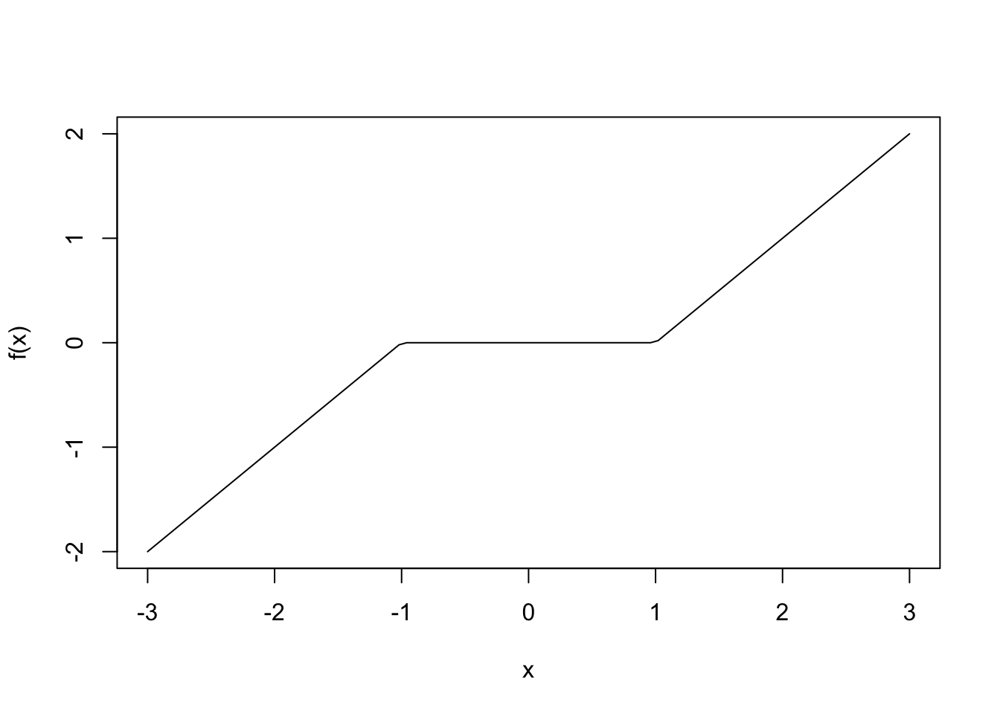
The function pivot_wider transforms a data set from long format to wide format. It is not essential to understand this function for this lecture, but so I will illustrate with an example. What if we want the babynames data set to have as each name as a row and the number of female and male babies as the data?
## # A tibble: 6 × 5
## year sex name n prop
## <dbl> <chr> <chr> <int> <dbl>
## 1 1880 F Mary 7065 0.0724
## 2 1880 F Anna 2604 0.0267
## 3 1880 F Emma 2003 0.0205
## 4 1880 F Elizabeth 1939 0.0199
## 5 1880 F Minnie 1746 0.0179
## 6 1880 F Margaret 1578 0.0162bb |>
filter(year == 2005) |>
select(name, n, sex) |>
pivot_wider(names_from = sex,
values_from = n,
values_fill = 0) |>
arrange(desc(F + M))## # A tibble: 30,153 × 3
## name F M
## <chr> <int> <int>
## 1 Jacob 40 25830
## 2 Emily 23937 33
## 3 Michael 61 23812
## 4 Joshua 43 23248
## 5 Matthew 33 21467
## 6 Ethan 36 21309
## 7 Andrew 32 20727
## 8 Emma 20339 36
## 9 Daniel 50 20208
## 10 Madison 19566 80
## # ℹ 30,143 more rowsFor factor vs factor interactions, cross-tables of means are often a good way to recognize the potential need for interactions; at least in the case you only have interaction between two variables.
#factor vs factor
x1 <- factor(c("low", "high"), levels = c("low", "high"))
x2 <- factor(c("flashcards", "practice_problems"))
dd <- data.frame(x1 = sample(x1, size = 30, replace = T),
x2 = sample(x2, size = 30, replace = T))
dd <- dd |>
mutate(y = case_when(
x1 == "low" & x2 == "flashcards" ~ 75,
x1 == "low" & x2 == "practice_problems" ~ 65,
x1 == "high" & x2 == "flashcards" ~ 80,
x1 == "high" & x2 == "practice_problems" ~ 90, #have to use vectorized & here
) + round(rnorm(30, 0, 10)))
dd |>
group_by(x1, x2) |>
summarize(mu = mean(y)) |>
pivot_wider(names_from = x2, values_from = mu)## `summarise()` has grouped output by 'x1'. You can override using the `.groups`
## argument.## # A tibble: 2 × 3
## # Groups: x1 [2]
## x1 flashcards practice_problems
## <fct> <dbl> <dbl>
## 1 low 77.8 68.7
## 2 high 81.5 86.3For factor vs numeric interactions, scatterplots with lines of best fit for each level of the factor are often a good way to recognize the potential need for interactions; at least in the case you only have interaction between two variables.
#factor vs numeric
x2 <- runif(30, 0, 10)
dd <- data.frame(x1 = sample(x1, size = 30, replace = T),
x2 = x2)
dd <- dd |>
mutate(y = case_when(
x1 == "low" ~ 1 * x2,
x1 == "high" ~ 2 * x2
) + rnorm(30, 0, 2))
dd |>
ggplot(aes(x = x2, y = y, color = x1)) +
geom_point() +
geom_smooth(method = "lm")## `geom_smooth()` using formula = 'y ~ x'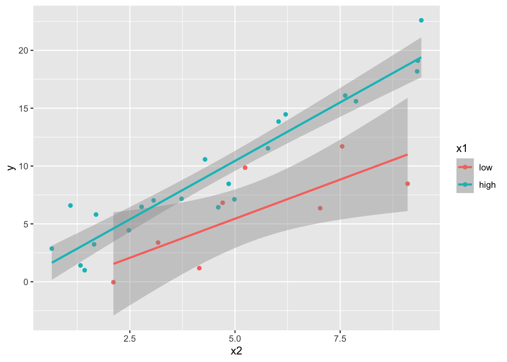
For numeric vs numeric, there are a few different ways of trying to recognize an interaction via exploratory vizualizations, but we will focus on plotting the line of best fit for several different intervals of one of the predictors. Let’s see how to simulate the data and to vizualize.
#numeric vs numeric
n <- 400 #bigger so that we can see things clearly; need plenty of data to have clear results
sleep <- runif(n, 2, 9)
study <- runif(n, 1, 6)
dd <- data.frame(sleepc = sleep - mean(sleep),
studyc = study - mean(study))
dd <- dd |>
mutate(score = round(78 + 4.0 * studyc + 3.0 * sleepc + 1.4 * studyc * sleepc + rnorm(n, 0, 4.5), 1))
dd |>
mutate(sleepint = cut(sleepc, 3)) |> #this creates 3 roughly equal groups in the sleep score
ggplot(aes(x = studyc, y = score, color = sleepint)) +
geom_point() +
geom_smooth(method = "lm")## `geom_smooth()` using formula = 'y ~ x'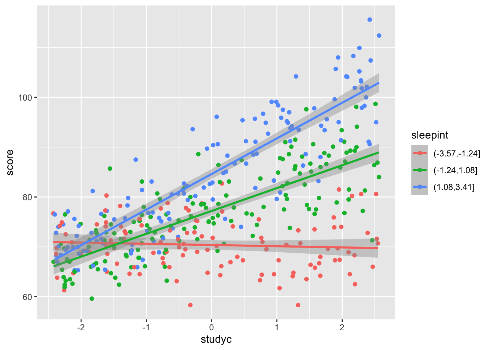
9.2.2 Building Models
We will build models on our simulated data above as well as on real data sets to see what is going on.
9.2.2.1 factor vs factor:
x1 <- factor(c("low", "high"), levels = c("low", "high"))
x2 <- factor(c("flashcards", "practice_problems"))
dd <- data.frame(x1 = sample(x1, size = 30, replace = T),
x2 = sample(x2, size = 30, replace = T))
dd <- dd |>
mutate(y = case_when(
x1 == "low" & x2 == "flashcards" ~ 75,
x1 == "low" & x2 == "practice_problems" ~ 65,
x1 == "high" & x2 == "flashcards" ~ 80,
x1 == "high" & x2 == "practice_problems" ~ 90, #have to use vectorized & here
) + round(rnorm(30, 0, 10)))
mod <- lm(y ~ x1 * x2, data = dd)
summary(mod) #interpret this into predictions/expected values for the combinations of levels!##
## Call:
## lm(formula = y ~ x1 * x2, data = dd)
##
## Residuals:
## Min 1Q Median 3Q Max
## -17.3333 -7.1333 0.1111 7.4778 15.6667
##
## Coefficients:
## Estimate Std. Error t value Pr(>|t|)
## (Intercept) 73.000 3.010 24.254 < 2e-16 ***
## x1high 4.889 4.373 1.118 0.273829
## x2practice_problems -10.600 5.213 -2.033 0.052350 .
## x1high:x2practice_problems 27.044 7.235 3.738 0.000922 ***
## ---
## Signif. codes: 0 '***' 0.001 '**' 0.01 '*' 0.05 '.' 0.1 ' ' 1
##
## Residual standard error: 9.518 on 26 degrees of freedom
## Multiple R-squared: 0.5631, Adjusted R-squared: 0.5127
## F-statistic: 11.17 on 3 and 26 DF, p-value: 6.819e-05Consider the penguins data set. Is there evidence of an interaction between species and sex when predicting body_mass?
penguins |>
filter(!is.na(sex)) |>
group_by(species, sex) |>
summarize(mu = mean(body_mass)) |>
pivot_wider(names_from = sex, values_from = mu)## `summarise()` has grouped output by 'species'. You can override using the
## `.groups` argument.## # A tibble: 3 × 3
## # Groups: species [3]
## species female male
## <fct> <dbl> <dbl>
## 1 Adelie 3369. 4043.
## 2 Chinstrap 3527. 3939.
## 3 Gentoo 4680. 5485.##
## Call:
## lm(formula = body_mass ~ species * sex, data = penguins)
##
## Residuals:
## Min 1Q Median 3Q Max
## -827.21 -213.97 11.03 206.51 861.03
##
## Coefficients:
## Estimate Std. Error t value Pr(>|t|)
## (Intercept) 3368.84 36.21 93.030 < 2e-16 ***
## speciesChinstrap 158.37 64.24 2.465 0.01420 *
## speciesGentoo 1310.91 54.42 24.088 < 2e-16 ***
## sexmale 674.66 51.21 13.174 < 2e-16 ***
## speciesChinstrap:sexmale -262.89 90.85 -2.894 0.00406 **
## speciesGentoo:sexmale 130.44 76.44 1.706 0.08886 .
## ---
## Signif. codes: 0 '***' 0.001 '**' 0.01 '*' 0.05 '.' 0.1 ' ' 1
##
## Residual standard error: 309.4 on 327 degrees of freedom
## (11 observations deleted due to missingness)
## Multiple R-squared: 0.8546, Adjusted R-squared: 0.8524
## F-statistic: 384.3 on 5 and 327 DF, p-value: < 2.2e-16What is the predicted/expected body mass of a male chinstrap penguin? This would make a good exam problem; I give you the ouptut and you interpret.
9.2.2.2 factor vs numeric
x2 <- runif(30, 0, 10)
dd <- data.frame(x1 = sample(x1, size = 30, replace = T),
x2 = x2)
dd <- dd |>
mutate(y = case_when(
x1 == "low" ~ 1 * x2,
x1 == "high" ~ 2 * x2
) + rnorm(30, 0, 2))
mod <- lm(y ~ x1 * x2, data = dd)
summary(mod)##
## Call:
## lm(formula = y ~ x1 * x2, data = dd)
##
## Residuals:
## Min 1Q Median 3Q Max
## -3.8866 -0.9466 -0.0584 1.1618 3.6873
##
## Coefficients:
## Estimate Std. Error t value Pr(>|t|)
## (Intercept) 1.2163 1.3182 0.923 0.36466
## x1high -1.6386 1.7188 -0.953 0.34917
## x2 0.8376 0.1976 4.239 0.00025 ***
## x1high:x2 1.2678 0.2726 4.650 8.46e-05 ***
## ---
## Signif. codes: 0 '***' 0.001 '**' 0.01 '*' 0.05 '.' 0.1 ' ' 1
##
## Residual standard error: 2.029 on 26 degrees of freedom
## Multiple R-squared: 0.8715, Adjusted R-squared: 0.8566
## F-statistic: 58.76 on 3 and 26 DF, p-value: 1.026e-11penguins |>
ggplot(aes(x = bill_len, y = body_mass, color = species)) +
geom_point() +
geom_smooth(method = "lm")## `geom_smooth()` using formula = 'y ~ x'## Warning: Removed 2 rows containing non-finite outside the scale range
## (`stat_smooth()`).## Warning: Removed 2 rows containing missing values or values outside the scale range
## (`geom_point()`).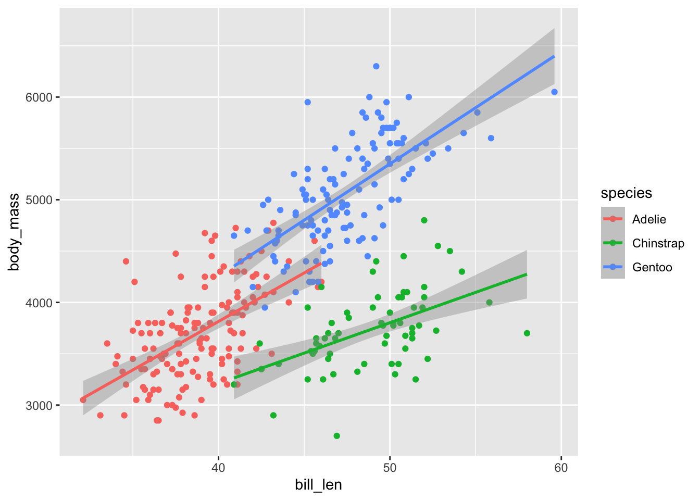
mod <- lm(body_mass ~ bill_len * species, data = penguins)
summary(mod) #barely significant, but significant##
## Call:
## lm(formula = body_mass ~ bill_len * species, data = penguins)
##
## Residuals:
## Min 1Q Median 3Q Max
## -918.76 -245.89 -8.65 238.44 1126.27
##
## Coefficients:
## Estimate Std. Error t value Pr(>|t|)
## (Intercept) 34.88 443.18 0.079 0.937
## bill_len 94.50 11.40 8.291 2.73e-15 ***
## speciesChinstrap 811.26 799.81 1.014 0.311
## speciesGentoo -158.71 683.19 -0.232 0.816
## bill_len:speciesChinstrap -35.38 17.75 -1.994 0.047 *
## bill_len:speciesGentoo 14.96 15.79 0.948 0.344
## ---
## Signif. codes: 0 '***' 0.001 '**' 0.01 '*' 0.05 '.' 0.1 ' ' 1
##
## Residual standard error: 371.8 on 336 degrees of freedom
## (2 observations deleted due to missingness)
## Multiple R-squared: 0.7882, Adjusted R-squared: 0.7851
## F-statistic: 250.1 on 5 and 336 DF, p-value: < 2.2e-169.2.2.3 numeric vs numeric
n <- 400 #bigger so that we can see things clearly; need plenty of data to have clear results
sleep <- runif(n, 2, 9)
study <- runif(n, 1, 6)
dd <- data.frame(sleepc = sleep - mean(sleep),
studyc = study - mean(study))
dd <- dd |>
mutate(score = round(78 + 4.0 * studyc + 3.0 * sleepc + 1.4 * studyc * sleepc + rnorm(n, 0, 4.5), 1))
mod <- lm(score ~ sleepc * studyc, data = dd)
summary(mod)##
## Call:
## lm(formula = score ~ sleepc * studyc, data = dd)
##
## Residuals:
## Min 1Q Median 3Q Max
## -13.2418 -2.7766 0.0401 3.4414 14.3340
##
## Coefficients:
## Estimate Std. Error t value Pr(>|t|)
## (Intercept) 77.9174 0.2431 320.46 <2e-16 ***
## sleepc 3.0431 0.1201 25.34 <2e-16 ***
## studyc 3.9047 0.1696 23.02 <2e-16 ***
## sleepc:studyc 1.4204 0.0852 16.67 <2e-16 ***
## ---
## Signif. codes: 0 '***' 0.001 '**' 0.01 '*' 0.05 '.' 0.1 ' ' 1
##
## Residual standard error: 4.851 on 396 degrees of freedom
## Multiple R-squared: 0.7912, Adjusted R-squared: 0.7896
## F-statistic: 500.1 on 3 and 396 DF, p-value: < 2.2e-16penguins |>
mutate(bill_len = cut(bill_len, 4)) |>
ggplot(aes(x = bill_dep, y = body_mass, color = bill_len)) +
geom_point() +
geom_smooth(method = "lm") #oof, this is terrible; we should not build a model based on this. why?## `geom_smooth()` using formula = 'y ~ x'## Warning: Removed 2 rows containing non-finite outside the scale range
## (`stat_smooth()`).## Warning: Removed 2 rows containing missing values or values outside the scale range
## (`geom_point()`).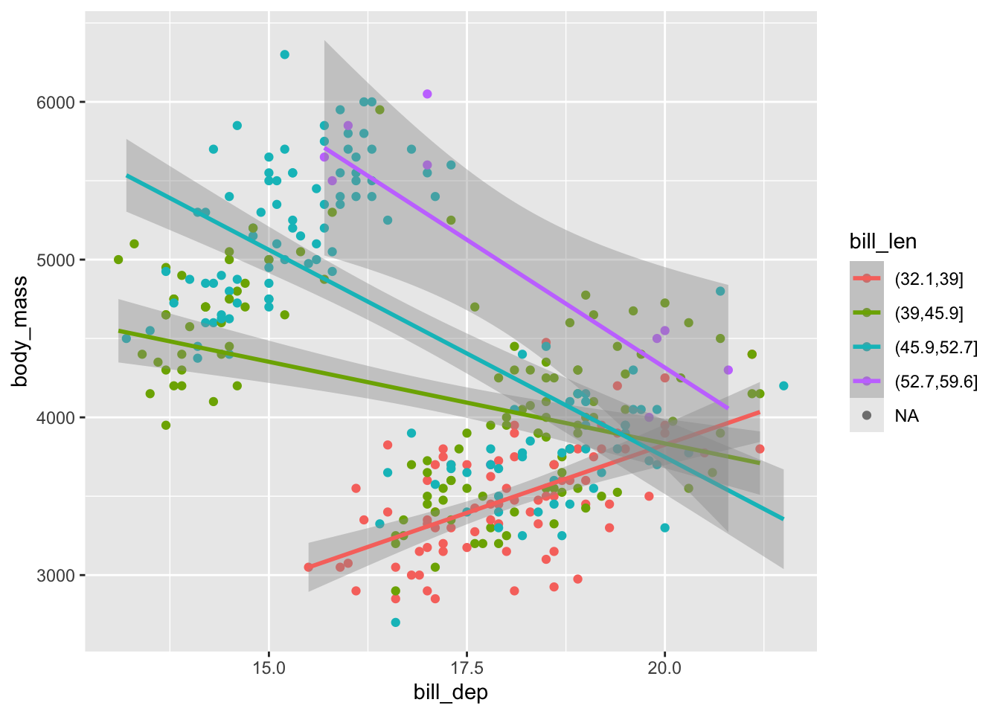
9.3 February 5
Here is a summary of things to know from February 5. We focused on multicollinearity of the predictors in a regression model and understanding one-way and two-way ANOVA models. But first, a quick “review” of how to augment a data fram a model.
9.3.1 Using broom::augment
The easiest way to add fitted values and residuals to a data frame is to use the broom::augment function. Here is an example using the penguins data set.
library(broom) #part of the tidyverse, but not the tidyverse package
mod <- lm(body_mass ~ bill_len + bill_dep + flipper_len, data = penguins)
augmented_data <- broom::augment(mod) #this is in the broom package
head(augmented_data)## # A tibble: 6 × 11
## .rownames body_mass bill_len bill_dep flipper_len .fitted .resid .hat
## <chr> <int> <dbl> <dbl> <int> <dbl> <dbl> <dbl>
## 1 1 3750 39.1 18.7 181 3212. 538. 0.00883
## 2 2 3800 39.5 17.4 186 3439. 361. 0.00731
## 3 3 3250 40.3 18 195 3906. -656. 0.00460
## 4 5 3450 36.7 19.3 193 3817. -367. 0.0133
## 5 6 3650 39.3 20.6 190 3703. -53.0 0.0143
## 6 7 3625 38.9 17.8 181 3193. 432. 0.00999
## # ℹ 3 more variables: .sigma <dbl>, .cooksd <dbl>, .std.resid <dbl>Let’s look at each of the new variables.
.fittedare the fitted values from the model..residare the residuals from the model..hatare the leverages from the model. These measure how far away each observation is from the center of the data in terms of the predictor variables..sigmaare the standard deviations of the residuals after removing each observation one at a time..cooksdare Cook’s distances, which measure how much influence each observation has; that is how much the fitted values would change if we removed that observation from the data set and refit the model..std.residare the standardized residuals, which are the residuals divided by their standard deviation. These are useful for finding outliers in the response variable.
Let’s look at an example or two to see what is going on.
n <- 10
x <- c(runif(n - 1), 10)
y <- x + 2 + rnorm(n, 0, 1)
mod <- lm(y ~ x)
augmented_data <- broom::augment(mod)
augmented_data## # A tibble: 10 × 8
## y x .fitted .resid .hat .sigma .cooksd .std.resid
## <dbl> <dbl> <dbl> <dbl> <dbl> <dbl> <dbl> <dbl>
## 1 1.54 0.284 1.94 -0.401 0.118 1.60 0.00541 -0.284
## 2 3.20 0.748 2.42 0.780 0.107 1.58 0.0180 0.548
## 3 1.41 0.613 2.28 -0.870 0.110 1.57 0.0231 -0.612
## 4 3.11 0.513 2.18 0.937 0.112 1.57 0.0275 0.660
## 5 0.306 0.874 2.55 -2.25 0.105 1.34 0.146 -1.58
## 6 4.30 0.0133 1.66 2.65 0.128 1.20 0.259 1.88
## 7 1.84 0.555 2.22 -0.381 0.111 1.60 0.00449 -0.268
## 8 3.58 0.924 2.60 0.971 0.104 1.56 0.0270 0.681
## 9 0.596 0.535 2.20 -1.60 0.112 1.48 0.0803 -1.13
## 10 12.2 10 12.0 0.169 0.993 1.42 120. 1.32Note that both the leverage and Cook’s distance are large for the last observation, which is an outlier in the predictor variable.
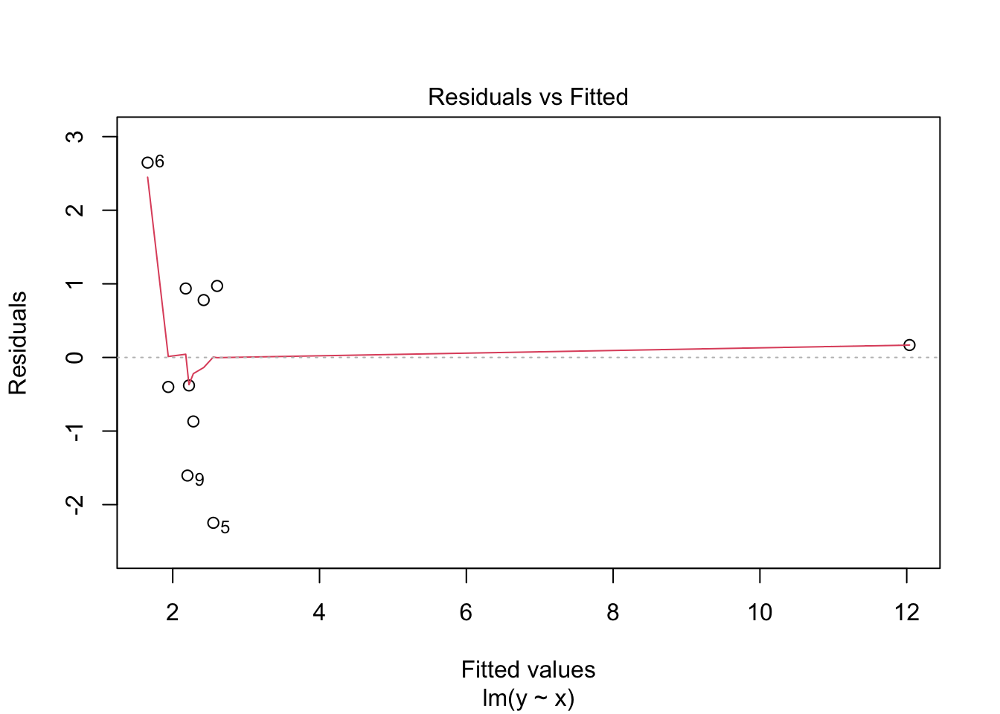
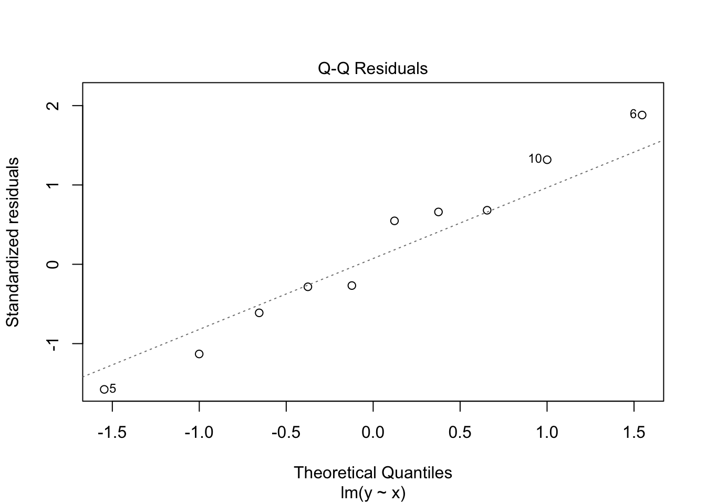
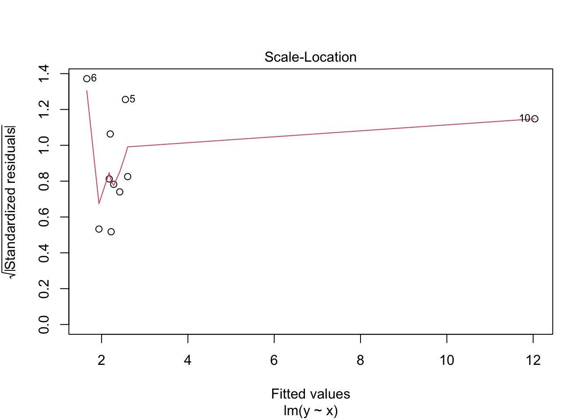
## Warning in sqrt(crit * p * (1 - hh)/hh): NaNs produced
## Warning in sqrt(crit * p * (1 - hh)/hh): NaNs produced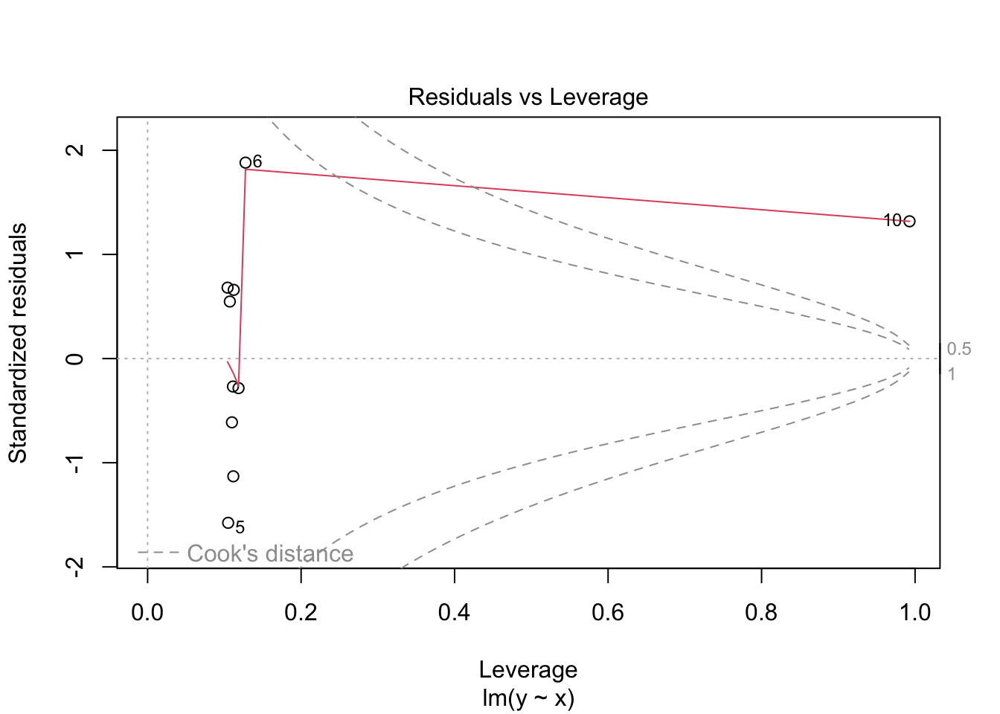
n <- 10
x <- c(runif(n))
y <- x + 2 + rnorm(n, 0, 1)
y[which.max(x)] <- 20 #make the last one an outlier in y
mod <- lm(y ~ x)
augmented_data <- broom::augment(mod)
augmented_data## # A tibble: 10 × 8
## y x .fitted .resid .hat .sigma .cooksd .std.resid
## <dbl> <dbl> <dbl> <dbl> <dbl> <dbl> <dbl> <dbl>
## 1 20 0.983 9.87 10.1 0.433 0.812 2.97 2.79
## 2 1.61 0.0282 -0.728 2.34 0.311 5.03 0.0771 0.585
## 3 2.31 0.862 8.54 -6.23 0.299 4.31 0.509 -1.54
## 4 1.55 0.177 0.930 0.623 0.188 5.14 0.00239 0.144
## 5 1.52 0.660 6.29 -4.77 0.151 4.76 0.103 -1.08
## 6 2.85 0.456 4.02 -1.17 0.100 5.12 0.00363 -0.256
## 7 2.49 0.316 2.47 0.0227 0.122 5.15 0.00000176 0.00504
## 8 3.36 0.167 0.816 2.54 0.195 5.03 0.0421 0.589
## 9 2.87 0.430 3.73 -0.862 0.101 5.13 0.00199 -0.189
## 10 1.17 0.435 3.79 -2.63 0.100 5.04 0.0184 -0.575Note that the standardized residual is large for the largest observation, which is an outlier in the response variable. In this case, .sigma is also much smaller for that observation, because removing it makes the residuals much smaller. The Cook’s distance is also large, because removing that observation would change the fitted values a lot. However, the leverage is not large, because that observation is not far away from the center of the data in terms of the predictor variable.
9.3.2 Multicollinearity
Multicollinearity occurs when two or more predictor variables are highly correlated with each other. This can cause problems in regression models, because it can make it difficult to determine the individual effect of each predictor on the response variable. It generally does not negatively affect the overall predictive power of the model, but it can make the coefficients unstable and difficult to interpret.
To detect multicollinearity, we can use the Variance Inflation Factor (VIF). A VIF value greater than 5 or 10 is often considered indicative of multicollinearity. Variance Inflation Factor can be computed using the car package in R.car::vif computes the variance inflation factor by regressing each predictor on all the other predictors and computing the \(R^2\) value for that regression. The VIF is then computed as
\[
VIF_j = \frac{1}{1 - R_j^2}
\]
Let’s look at a simulated example with multicollinearity.
set.seed(1)
n <- 100
x1 <- rnorm(n)
x2 <- 0.9 * x1 + rnorm(n, 0, .1) #highly correlated with x
x3 <- rnorm(n) #not correlated with x1
y <- 3 + 2 * x1 + 0.5 * x2 + 1 * x3 + rnorm(n, 0, 1)
mod <- lm(y ~ x1 + x2 + x3)
summary(mod)##
## Call:
## lm(formula = y ~ x1 + x2 + x3)
##
## Residuals:
## Min 1Q Median 3Q Max
## -2.58201 -0.52738 0.00281 0.65058 1.82364
##
## Coefficients:
## Estimate Std. Error t value Pr(>|t|)
## (Intercept) 3.05273 0.10065 30.331 <2e-16 ***
## x1 2.43652 0.95019 2.564 0.0119 *
## x2 -0.04942 1.04845 -0.047 0.9625
## x3 1.10462 0.09712 11.374 <2e-16 ***
## ---
## Signif. codes: 0 '***' 0.001 '**' 0.01 '*' 0.05 '.' 0.1 ' ' 1
##
## Residual standard error: 0.998 on 96 degrees of freedom
## Multiple R-squared: 0.8616, Adjusted R-squared: 0.8573
## F-statistic: 199.2 on 3 and 96 DF, p-value: < 2.2e-16## x1 x2 x3
## 72.395291 72.382006 1.002798Note the large standard errors for the coefficients of x1 and x2, as well as the high VIF values.
One would expect that if we ran this model many times and looked at the coefficients for x1 and x2, they would vary widely from one model to the next, because of the multicollinearity. However, the sum of the two coefficients should be more stable, because that is the combined effect of x1 and x2. Let’s check this out by simulating the model 1000 times and looking at the distribution of the coefficients.
For this simulation, we introduce purrr::map_df, which is a function that applies a function to each element of a list and returns the results as a data frame. Here, we use it to run the simulation 1000 times and collect the results.
simdata <- purrr::map_df(1:1000, function(x) {
x1 <- rnorm(n)
x2 <- 0.9 * x1 + rnorm(n, 0, .1) #highly correlated with x
x3 <- rnorm(n) #not correlated with x1
y <- 3 + 2 * x1 + 0.5 * x2 + 1 * x3 + rnorm(n, 0, 1)
mod <- lm(y ~ x1 + x2 + x3)
broom::tidy(mod) |> #returns a data frame with the coefficients
mutate(trial = x)
})
simdata |>
filter(term %in% c("x1", "x2")) |>
ggplot(aes(x = estimate, fill = term)) +
geom_density(alpha = 0.5) +
labs(title = "Distribution of Coefficients for x1 and x2",
x = "Coefficient Estimate",
y = "Density")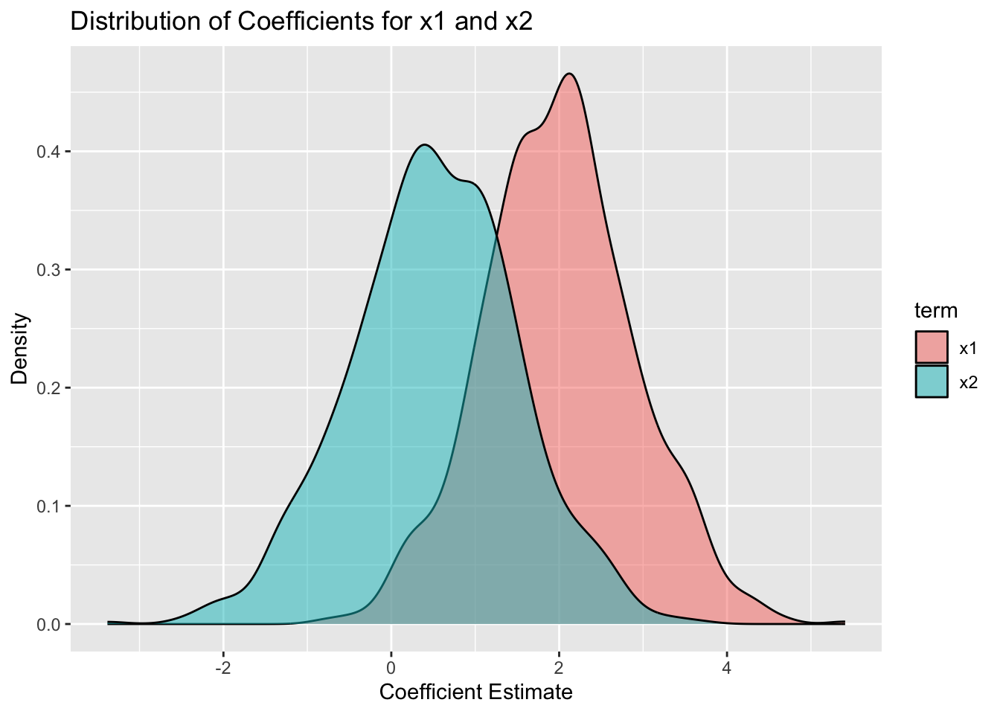
#let's compare that to the distribution of the sum of the coefficients
simdata |>
filter(term %in% c("x1", "x2")) |>
group_by(trial) |>
summarize(sum_estimate = sum(estimate)) |>
ggplot(aes(x = sum_estimate)) +
geom_density(fill = "blue", alpha = 0.5) +
labs(title = "Distribution of Sum of Coefficients for x1 and x2",
x = "Sum of Coefficient Estimates",
y = "Density") +
scale_x_continuous(limits = c(-3, 5))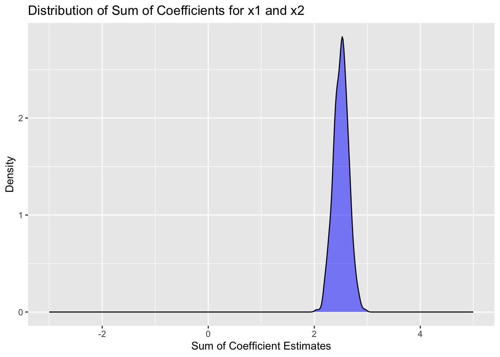
We see that the “correct” interpretation is that the sum of the coefficients for x1 and x2 is about 2.5, which is what we would expect from the data generating process. However, the individual coefficients vary widely from one simulation to the next, and would be hard to interpret.
What should you do if you discover multicollinearity in your data? Here are some options:
- Do nothing. If your goal is prediction only, then multicollinearity may not be a problem. If interpretation is still your goal, you can try to interpret the highly correlated variables jointly, rather than individually.
- Remove one or more of the correlated predictors from the model. Often you will choose to keep the variable that is either cheaper to measure, more fundamental theoretically, or more interpretable.
- Combine the correlated predictors into a single predictor (e.g., by taking their average or sum). This is often used when you have domain knowledge of the predictors. For example, height and weight could be combined into a body mass index (BMI) variable. Or section scores of the ACT could be combined into a total score.
- Use regularization techniques (e.g., ridge regression or lasso) that can handle multicollinearity. (We have not yet covered this material.)
As a summary, multicollinearity does not break your model. It is not an assumption of OLS that the predictors are uncorrelated. However, it can make interpretation of the coefficients difficult, and can lead to large standard errors for the coefficients.
As another example, let’s look at so-called polynomial regression, where we include powers of a predictor variable in the model. This can also lead to multicollinearity.
set.seed(1)
n <- 100
x <- runif(n, 0, 3)
y <- 2 + 1.5 * x - 0.5 * x^2 + 0.3 * x^3 + rnorm(n, 0, 1)
mod <- lm(y ~ x + I(x^2) + I(x^3)) #using raw = TRUE to get x, x^2, x^3
summary(mod)##
## Call:
## lm(formula = y ~ x + I(x^2) + I(x^3))
##
## Residuals:
## Min 1Q Median 3Q Max
## -1.85466 -0.59246 -0.09722 0.54144 2.48360
##
## Coefficients:
## Estimate Std. Error t value Pr(>|t|)
## (Intercept) 1.6348 0.4645 3.519 0.000664 ***
## x 2.2065 1.2415 1.777 0.078695 .
## I(x^2) -0.9631 0.9473 -1.017 0.311866
## I(x^3) 0.3993 0.2099 1.902 0.060190 .
## ---
## Signif. codes: 0 '***' 0.001 '**' 0.01 '*' 0.05 '.' 0.1 ' ' 1
##
## Residual standard error: 0.9496 on 96 degrees of freedom
## Multiple R-squared: 0.8326, Adjusted R-squared: 0.8274
## F-statistic: 159.2 on 3 and 96 DF, p-value: < 2.2e-16car::vif(mod) #we have massive multicollinearity here. centering x helps, but does not completely fix the situation.## x I(x^2) I(x^3)
## 109.0490 621.0930 239.6857To remove multicollinearity in polynomial regression, we can use orthogonal polynomials instead of raw polynomials. This can be done using the poly function in R.
## 1 2 3
## [1,] -0.09477731 -0.01967963 0.10653921
## [2,] -0.05473305 -0.08090358 0.08306444
## [3,] 0.02066015 -0.10185681 -0.06116614
## [4,] 0.14661795 0.13798027 0.09603581
## [5,] -0.11875038 0.03360430 0.07885130
## [6,] 0.14293031 0.12607236 0.07431485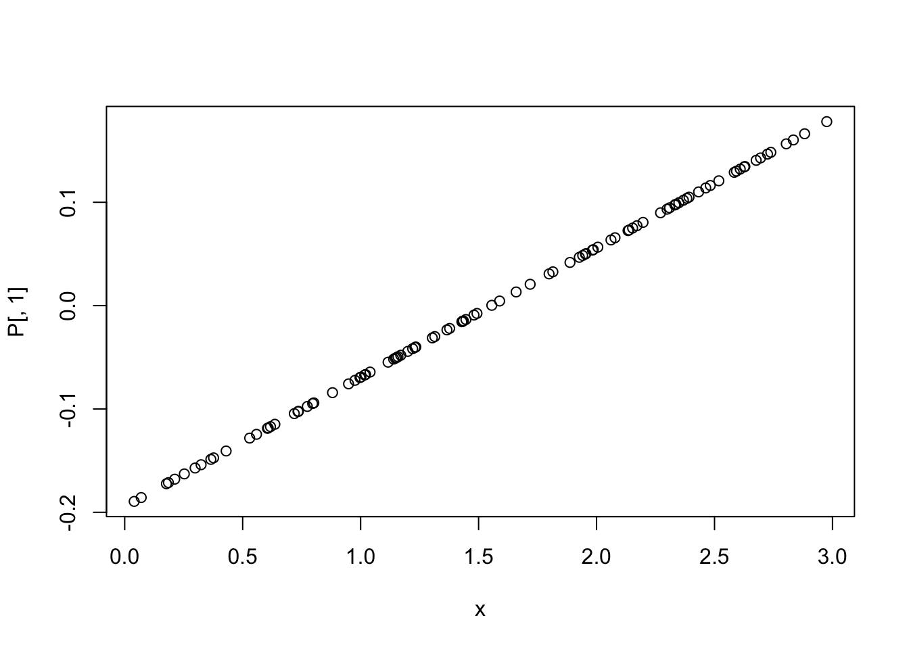
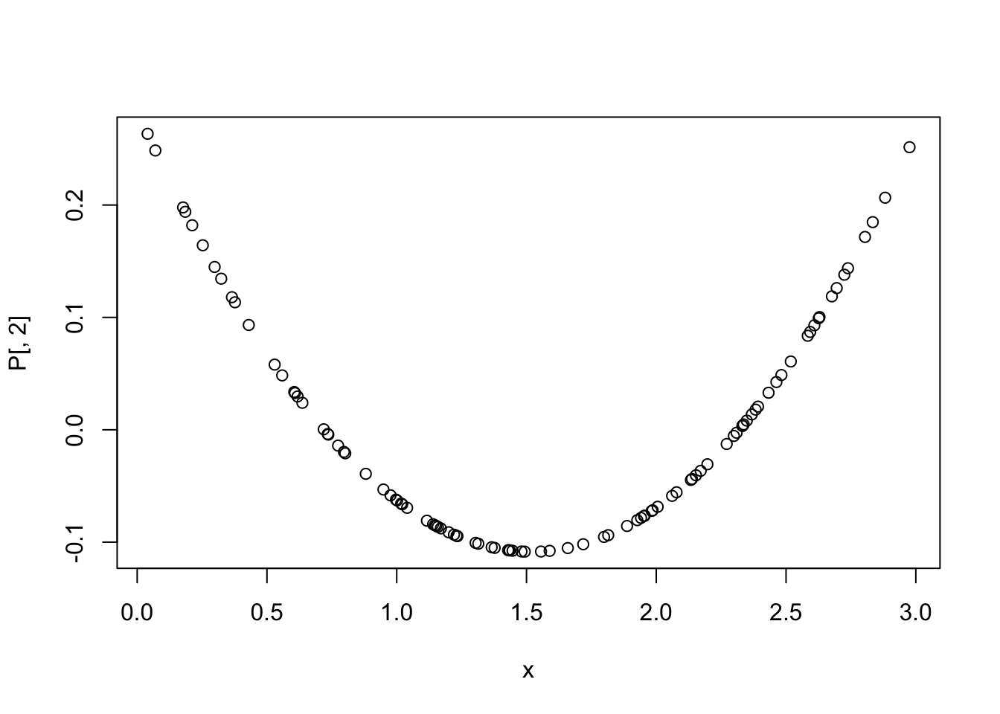
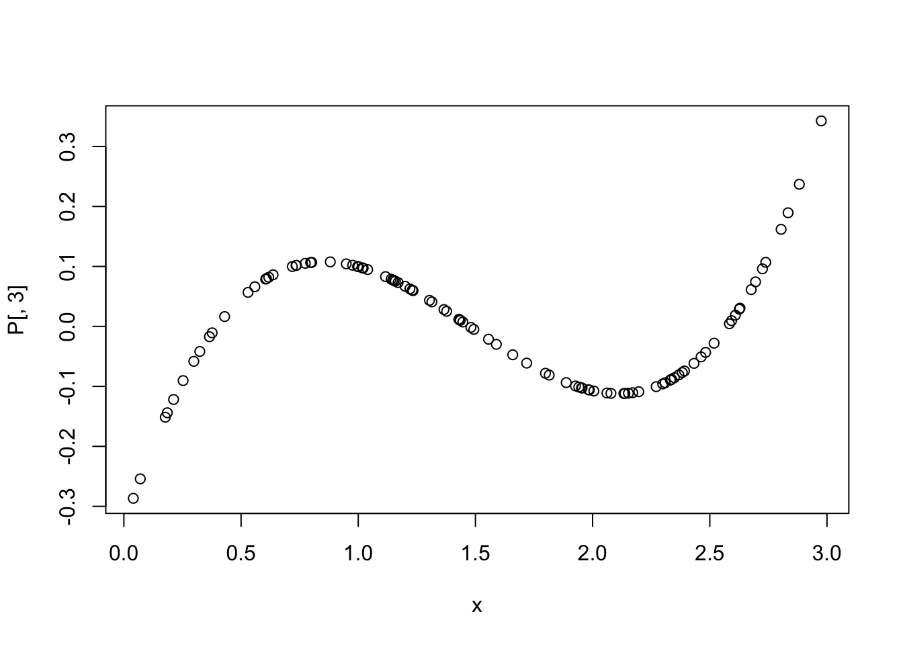
P <- data.frame(P,check.names = T)
P$y <- y
mod2 <- lm(y ~ ., data = P) #using orthogonal polynomials
summary(mod2)##
## Call:
## lm(formula = y ~ ., data = P)
##
## Residuals:
## Min 1Q Median 3Q Max
## -1.85466 -0.59246 -0.09722 0.54144 2.48360
##
## Coefficients:
## Estimate Std. Error t value Pr(>|t|)
## (Intercept) 4.79096 0.09496 50.451 < 2e-16 ***
## X1 20.11185 0.94962 21.179 < 2e-16 ***
## X2 4.78141 0.94962 5.035 2.23e-06 ***
## X3 1.80602 0.94962 1.902 0.0602 .
## ---
## Signif. codes: 0 '***' 0.001 '**' 0.01 '*' 0.05 '.' 0.1 ' ' 1
##
## Residual standard error: 0.9496 on 96 degrees of freedom
## Multiple R-squared: 0.8326, Adjusted R-squared: 0.8274
## F-statistic: 159.2 on 3 and 96 DF, p-value: < 2.2e-16## X1 X2 X3
## 1 1 1For model selection, it is generally better to use orthogonal polynomials when including polynomial terms in a regression model, because they do not suffer from multicollinearity. That means it is easier to determine whether to remove the cubic predictor, for example, based on its p-value.
9.4 February 10
9.4.1 ANOVA Models2
ANOVA (Analysis of Variance) models are a special case of linear regression models where the predictors are categorical variables (factors). They are used to compare the means of different groups and to determine if there are significant differences between them. We have already studied linear models which contain only categorical data, so this is a review of that material with some additional nuances.
We begin with a brief review of one-way ANOVA models, which contain a single categorical predictor. The model can be written as \[ y_{ij} = \mu + \alpha_i + \epsilon_{ij} \] where \(y_{ij}\) is the response variable for the \(j\)th observation in group \(i\), \(\mu\) is the overall mean, \(\alpha_i\) is the effect of group \(i\), and \(\epsilon_{ij}\) is the random error term. The null hypothesis is that all group means are equal, i.e., \(\alpha_1 = \alpha_2 = \ldots = \alpha_k = 0\). This way of writing the model is called the effects coding. Another way to write the model is the treatment coding, which is more common in R, and is given by \[ y_{ij} = \beta_0 + \beta_i D_i + \epsilon_{ij} \] where \(D_i\) is a dummy variable that is 1 if the observation is in group \(i\) and 0 otherwise. In this case, \(\beta_0\) is the mean of the reference group (usually the first group), and \(\beta_i\) is the difference between the mean of group \(i\) and the mean of the reference group.
We assume that the errors are normally distributed with mean 0 and constant variance. The ANOVA table partitions the total variability in the data into variability between groups and variability within groups. The F-statistic is used to test the null hypothesis, and is computed as the ratio of the mean square between groups to the mean square within groups.
Let’s look at an example using the penguins data set to compare body mass across species.
library(ggplot2)
penguins |>
ggplot(aes(x = species, y = body_mass)) +
geom_boxplot() +
labs(title = "Body Mass by Penguin Species",
x = "Species",
y = "Body Mass (g)") #approximately normal with equal variances## Warning: Removed 2 rows containing non-finite outside the scale range
## (`stat_boxplot()`).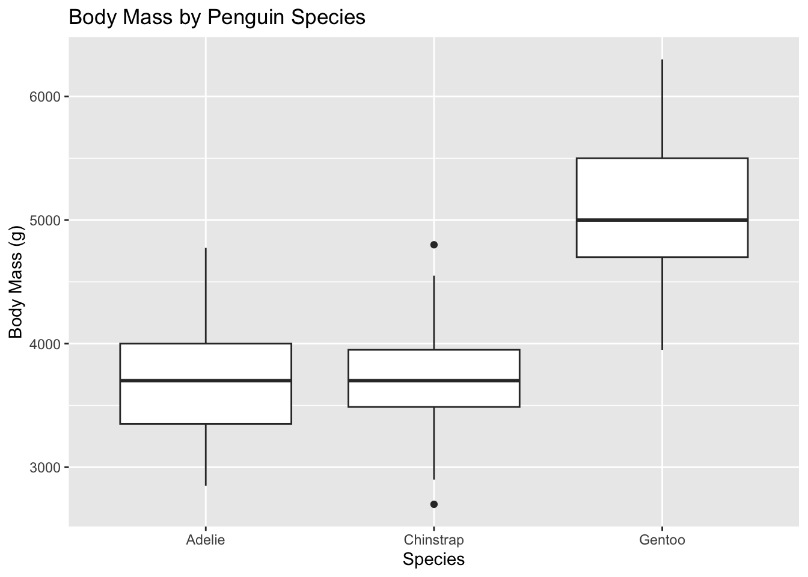
##
## Call:
## lm(formula = body_mass ~ species, data = penguins)
##
## Residuals:
## Min 1Q Median 3Q Max
## -1126.02 -333.09 -33.09 316.91 1223.98
##
## Coefficients:
## Estimate Std. Error t value Pr(>|t|)
## (Intercept) 3700.66 37.62 98.37 <2e-16 ***
## speciesChinstrap 32.43 67.51 0.48 0.631
## speciesGentoo 1375.35 56.15 24.50 <2e-16 ***
## ---
## Signif. codes: 0 '***' 0.001 '**' 0.01 '*' 0.05 '.' 0.1 ' ' 1
##
## Residual standard error: 462.3 on 339 degrees of freedom
## (2 observations deleted due to missingness)
## Multiple R-squared: 0.6697, Adjusted R-squared: 0.6677
## F-statistic: 343.6 on 2 and 339 DF, p-value: < 2.2e-16## Analysis of Variance Table
##
## Response: body_mass
## Df Sum Sq Mean Sq F value Pr(>F)
## species 2 146864214 73432107 343.63 < 2.2e-16 ***
## Residuals 339 72443483 213698
## ---
## Signif. codes: 0 '***' 0.001 '**' 0.01 '*' 0.05 '.' 0.1 ' ' 1Note that the p-value from the ANOVA table matches the p-value for the overall F-test in the linear model summary. If we wish to determine which species are different from each other, we can use post-hoc tests such as Tukey’s HSD.
## Warning: package 'emmeans' was built under R version 4.5.2## Welcome to emmeans.
## Caution: You lose important information if you filter this package's results.
## See '? untidy'## contrast estimate SE df t.ratio p.value
## Adelie - Chinstrap -32.4 67.5 339 -0.480 0.8807
## Adelie - Gentoo -1375.4 56.1 339 -24.495 <0.0001
## Chinstrap - Gentoo -1342.9 69.9 339 -19.224 <0.0001
##
## P value adjustment: tukey method for comparing a family of 3 estimatesNow let’s look at two-way ANOVA models, which contain two categorical predictors. The model can be written as
\[ y_{ijk} = \mu + \alpha_i + \beta_j + (\alpha\beta)_{ij} + \epsilon_{ijk} \] where \(y_{ijk}\) is the response variable for the \(k\)th observation in group \(i\) of factor A and group \(j\) of factor B, \(\mu\) is the overall mean, \(\alpha_i\) is the effect of level \(i\) of factor A, \(\beta_j\) is the effect of level \(j\) of factor B, \((\alpha\beta)_{ij}\) is the interaction effect between levels \(i\) and \(j\), and \(\epsilon_{ijk}\) is the random error term. The null hypotheses are that all main effects and interaction effects are equal to zero.
Let’s look at an example using the ToothGrowth data set, which contains data on tooth length in guinea pigs under different doses of vitamin C and different delivery methods (orange juice vs. ascorbic acid).
## len supp dose
## 1 4.2 VC 0.5
## 2 11.5 VC 0.5
## 3 7.3 VC 0.5
## 4 5.8 VC 0.5
## 5 6.4 VC 0.5
## 6 10.0 VC 0.5tt <- ToothGrowth |>
mutate(dose = factor(dose))
ggplot(tt, aes(x = dose, y = len, fill = supp)) +
geom_boxplot(position = position_dodge(0.8)) +
labs(title = "Tooth Length by Dose and Supplement Type",
x = "Dose (mg)",
y = "Tooth Length (mm)")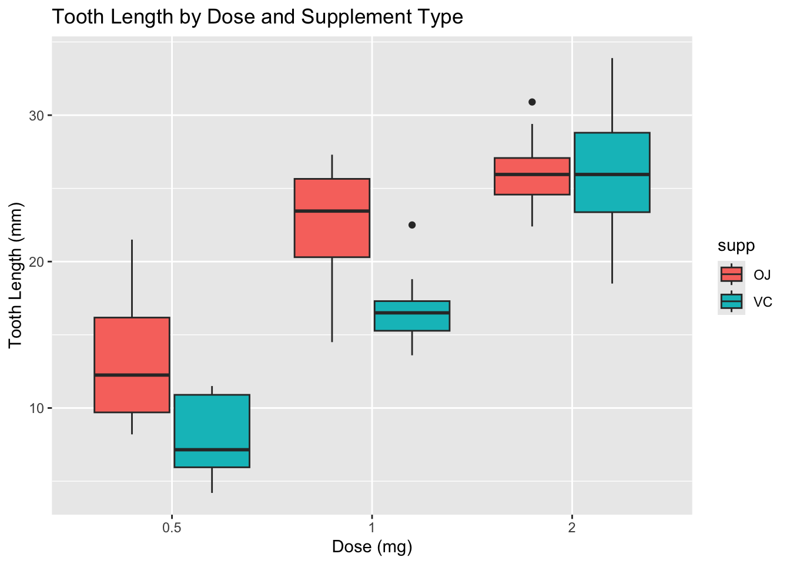
Note that the boxplots suggest a potential interaction between dose and supplement type. It also looks like the variances are not equal across groups, especially at higher doses. Let’s examine the variances more closely.
## `summarise()` has grouped output by 'dose'. You can override using the
## `.groups` argument.## # A tibble: 6 × 4
## # Groups: dose [3]
## dose supp var_len n
## <fct> <fct> <dbl> <int>
## 1 0.5 OJ 4.46 10
## 2 0.5 VC 2.75 10
## 3 1 OJ 3.91 10
## 4 1 VC 2.52 10
## 5 2 OJ 2.66 10
## 6 2 VC 4.80 10There is some variation in the standard deviations across groups, but it is not extreme. Also note that the study is balanced, with equal sample sizes in each group, which helps mitigate the impact of unequal variances.
Let’s fit the two-way ANOVA model with interaction.
##
## Call:
## lm(formula = len ~ dose * supp, data = tt)
##
## Residuals:
## Min 1Q Median 3Q Max
## -8.20 -2.72 -0.27 2.65 8.27
##
## Coefficients:
## Estimate Std. Error t value Pr(>|t|)
## (Intercept) 13.230 1.148 11.521 3.60e-16 ***
## dose1 9.470 1.624 5.831 3.18e-07 ***
## dose2 12.830 1.624 7.900 1.43e-10 ***
## suppVC -5.250 1.624 -3.233 0.00209 **
## dose1:suppVC -0.680 2.297 -0.296 0.76831
## dose2:suppVC 5.330 2.297 2.321 0.02411 *
## ---
## Signif. codes: 0 '***' 0.001 '**' 0.01 '*' 0.05 '.' 0.1 ' ' 1
##
## Residual standard error: 3.631 on 54 degrees of freedom
## Multiple R-squared: 0.7937, Adjusted R-squared: 0.7746
## F-statistic: 41.56 on 5 and 54 DF, p-value: < 2.2e-16## Analysis of Variance Table
##
## Response: len
## Df Sum Sq Mean Sq F value Pr(>F)
## dose 2 2426.43 1213.22 92.000 < 2.2e-16 ***
## supp 1 205.35 205.35 15.572 0.0002312 ***
## dose:supp 2 108.32 54.16 4.107 0.0218603 *
## Residuals 54 712.11 13.19
## ---
## Signif. codes: 0 '***' 0.001 '**' 0.01 '*' 0.05 '.' 0.1 ' ' 1To interpret the ANOVA table, we note that the p-value for the interaction term tests whether the effect of dose on tooth length depends on the type of supplement. If the interaction is significant, we should be cautious in interpreting the main effects, as they may not represent the overall effects across all levels of the other factor. If the interaction is not significant, we can consider removing it from the model and interpreting the main effects directly. Let’s check the interaction plot to visualize the interaction effect.
ggplot(tt, aes(x = dose, y = len, color = supp, group = supp)) +
geom_point(position = position_dodge(0.2)) +
geom_line(position = position_dodge(0.2)) +
labs(title = "Interaction Plot: Tooth Length by Dose and Supplement Type",
x = "Dose (mg)",
y = "Tooth Length (mm)")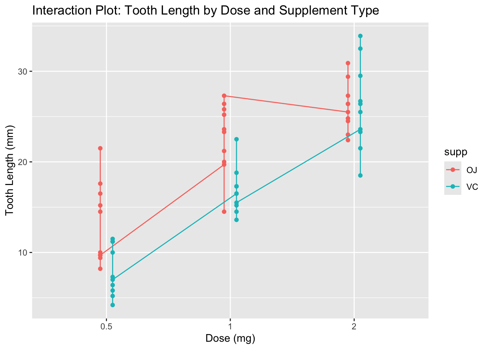
It appears that OJ at doses 0.5 and 1.0 results in longer tooth lengths compared to VC, but at dose 2.0, both supplements yield similar tooth lengths. This suggests a potential interaction effect.
If we decide to remove the interaction term, we can refit the model without it and interpret the main effects.
##
## Call:
## lm(formula = len ~ dose + supp, data = tt)
##
## Residuals:
## Min 1Q Median 3Q Max
## -7.085 -2.751 -0.800 2.446 9.650
##
## Coefficients:
## Estimate Std. Error t value Pr(>|t|)
## (Intercept) 12.4550 0.9883 12.603 < 2e-16 ***
## dose1 9.1300 1.2104 7.543 4.38e-10 ***
## dose2 15.4950 1.2104 12.802 < 2e-16 ***
## suppVC -3.7000 0.9883 -3.744 0.000429 ***
## ---
## Signif. codes: 0 '***' 0.001 '**' 0.01 '*' 0.05 '.' 0.1 ' ' 1
##
## Residual standard error: 3.828 on 56 degrees of freedom
## Multiple R-squared: 0.7623, Adjusted R-squared: 0.7496
## F-statistic: 59.88 on 3 and 56 DF, p-value: < 2.2e-16## Analysis of Variance Table
##
## Response: len
## Df Sum Sq Mean Sq F value Pr(>F)
## dose 2 2426.43 1213.22 82.811 < 2.2e-16 ***
## supp 1 205.35 205.35 14.017 0.0004293 ***
## Residuals 56 820.43 14.65
## ---
## Signif. codes: 0 '***' 0.001 '**' 0.01 '*' 0.05 '.' 0.1 ' ' 1However, in this case, the interaction term was significant, so we should keep it in the model and interpret the effects accordingly.
## contrast estimate SE df t.ratio p.value
## dose0.5 OJ - dose1 OJ -9.47 1.62 54 -5.831 <0.0001
## dose0.5 OJ - dose2 OJ -12.83 1.62 54 -7.900 <0.0001
## dose0.5 OJ - dose0.5 VC 5.25 1.62 54 3.233 0.0243
## dose0.5 OJ - dose1 VC -3.54 1.62 54 -2.180 0.2640
## dose0.5 OJ - dose2 VC -12.91 1.62 54 -7.949 <0.0001
## dose1 OJ - dose2 OJ -3.36 1.62 54 -2.069 0.3187
## dose1 OJ - dose0.5 VC 14.72 1.62 54 9.064 <0.0001
## dose1 OJ - dose1 VC 5.93 1.62 54 3.651 0.0074
## dose1 OJ - dose2 VC -3.44 1.62 54 -2.118 0.2936
## dose2 OJ - dose0.5 VC 18.08 1.62 54 11.133 <0.0001
## dose2 OJ - dose1 VC 9.29 1.62 54 5.720 <0.0001
## dose2 OJ - dose2 VC -0.08 1.62 54 -0.049 1.0000
## dose0.5 VC - dose1 VC -8.79 1.62 54 -5.413 <0.0001
## dose0.5 VC - dose2 VC -18.16 1.62 54 -11.182 <0.0001
## dose1 VC - dose2 VC -9.37 1.62 54 -5.770 <0.0001
##
## P value adjustment: tukey method for comparing a family of 6 estimatesThis provides tests of all pairs of possible interactions. It can be hard to interpret so much output, and we also need to be careful about multiple comparisons. Let’s suppose that our research question is: “how do the dose level effects differ by supplement type?” We can use emmeans to answer this specific question.
## supp = OJ:
## contrast estimate SE df t.ratio p.value
## dose0.5 - dose1 -9.47 1.62 54 -5.831 <0.0001
## dose0.5 - dose2 -12.83 1.62 54 -7.900 <0.0001
## dose1 - dose2 -3.36 1.62 54 -2.069 0.1060
##
## supp = VC:
## contrast estimate SE df t.ratio p.value
## dose0.5 - dose1 -8.79 1.62 54 -5.413 <0.0001
## dose0.5 - dose2 -18.16 1.62 54 -11.182 <0.0001
## dose1 - dose2 -9.37 1.62 54 -5.770 <0.0001
##
## P value adjustment: tukey method for comparing a family of 3 estimatesThis indicates that tooth growth increases with dose for both supplement types, but for OJ the increase is not significant from dose 1 to dose 2, while for VC the increase is significant at each step. To improve this, we might only want to test the increase in dosages from 0.5 to 1 and from 1 to 2, because the increase from 0.5 to 2 is redundant. We can do this by specifying contrasts in emmeans.
## supp = OJ:
## contrast estimate SE df t.ratio p.value
## dose1 - dose0.5 9.47 1.62 54 5.831 <0.0001
## dose2 - dose0.5 12.83 1.62 54 7.900 <0.0001
##
## supp = VC:
## contrast estimate SE df t.ratio p.value
## dose1 - dose0.5 8.79 1.62 54 5.413 <0.0001
## dose2 - dose0.5 18.16 1.62 54 11.182 <0.0001
##
## P value adjustment: holm method for 2 testsIn this case, we note that contrast chooses the base level of the factor as the control group. So for dose, the control is 0.5, and we are testing 1 vs 0.5 and 2 vs 0.5. The Holm adjustment is a way to control the family-wise error rate when making multiple comparisons. If we wanted to test 0.5 vs 1 and 1 vs 2 instead, we would need to reorder the levels of the factor dose so that 1 is the base level. This is not really treatment vs control, but the function is flexible enough to handle this situation.
9.4.2 Penguins
Let’s do one more ANOVA. Suppose we want to model body_mass on species and sex. We have already seen that there is a significant interaction between these two variables. Let’s look at the ANOVA table.
##
## Call:
## lm(formula = body_mass ~ species * sex, data = penguins)
##
## Residuals:
## Min 1Q Median 3Q Max
## -827.21 -213.97 11.03 206.51 861.03
##
## Coefficients:
## Estimate Std. Error t value Pr(>|t|)
## (Intercept) 3368.84 36.21 93.030 < 2e-16 ***
## speciesChinstrap 158.37 64.24 2.465 0.01420 *
## speciesGentoo 1310.91 54.42 24.088 < 2e-16 ***
## sexmale 674.66 51.21 13.174 < 2e-16 ***
## speciesChinstrap:sexmale -262.89 90.85 -2.894 0.00406 **
## speciesGentoo:sexmale 130.44 76.44 1.706 0.08886 .
## ---
## Signif. codes: 0 '***' 0.001 '**' 0.01 '*' 0.05 '.' 0.1 ' ' 1
##
## Residual standard error: 309.4 on 327 degrees of freedom
## (11 observations deleted due to missingness)
## Multiple R-squared: 0.8546, Adjusted R-squared: 0.8524
## F-statistic: 384.3 on 5 and 327 DF, p-value: < 2.2e-16All of them are significant. We should always plot the data though.
## Warning: Removed 2 rows containing non-finite outside the scale range
## (`stat_boxplot()`).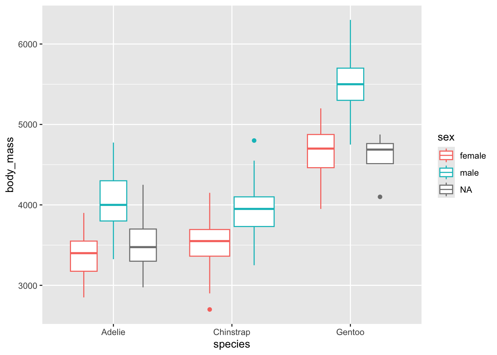
Let’s look at the effect of species within each sex. Recall that there was no significant difference between Adelie and Chinstrap overall; now we can see why.
## sex = female:
## contrast estimate SE df t.ratio p.value
## Adelie - Chinstrap -158 64.2 327 -2.465 0.0377
## Adelie - Gentoo -1311 54.4 327 -24.088 <0.0001
## Chinstrap - Gentoo -1153 66.8 327 -17.246 <0.0001
##
## sex = male:
## contrast estimate SE df t.ratio p.value
## Adelie - Chinstrap 105 64.2 327 1.627 0.2357
## Adelie - Gentoo -1441 53.7 327 -26.855 <0.0001
## Chinstrap - Gentoo -1546 66.2 327 -23.345 <0.0001
##
## P value adjustment: tukey method for comparing a family of 3 estimates9.5 February 12
9.5.1 An Example
Let’s consider the accent data set in the ardata package. Twenty-four participants read 60 sentences and agreed to rate the accent of other participants (and themselves) on a scale of 1-6, with lower being better. The data set contains 5760 observations; not every participant rated every combination of participant and sentence. In this example, we are only interested in the reaction time of the rater. In particular, we are interested in whether the mean reaction time is different when the participant listens to themselves.
We point out that there are many things going on in this data! We have the speakers repeating, we have the sentences repeating, and we have the same participant rating 240 sentences.
In this first example, we are going to ignore the possible dependence on sentences and speakers, and focus only on the possible dependence on rater. It seems likely that each rater has their own mean time for rating, rather than all of the raters having the same overall mean time for rating. Let’s look at a plot.
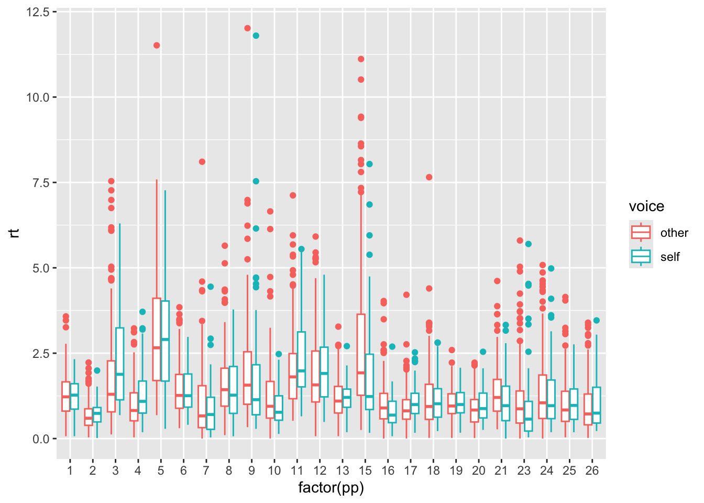
We see some other issues that come up in this plot - reaction time is right skew, and we don’t appear to have equal variances across groups. Nonetheless, we continue.
We also note that some of the reaction times are suspiciously small.
## # A tibble: 10 × 15
## pair pp group sentence spk_thisTrial voice wavfile trial rating rt
## <fct> <int> <fct> <int> <int> <fct> <fct> <int> <int> <dbl>
## 1 24_1 24 E 6 1 other spk1_6.w… 148 4 0.00243
## 2 17_21 17 A 3 21 other spk21_3.… 187 1 0.00249
## 3 21_21 21 A 26 21 self spk21_26… 201 1 0.00252
## 4 24_1 24 E 4 1 other spk1_4.w… 52 4 0.00253
## 5 16_6 16 FALSE 5 6 other spk6_5.w… 127 3 0.00257
## 6 23_26 23 B 16 26 other spk26_16… 144 1 0.00258
## 7 7_25 7 A 13 25 other spk25_13… 213 6 0.00261
## 8 10_8 10 C 2 8 other spk8_2.w… 159 3 0.00357
## 9 2_2 2 D 39 2 self spk2_39.… 172 2 0.0171
## 10 20_2 20 D 9 2 other spk2_9.w… 94 3 0.0176
## # ℹ 5 more variables: participant <int>, voiceC <dbl>, trialC <dbl>,
## # recognition <dbl>, simRatingPair <dbl>Let’s remove any of the data that has a reaction time less than 0.2 seconds, which already seems very fast.
The model that we will use is3
\[\begin{equation} \text{RT}_{ij} = \gamma_{00} + \beta_1 \text{Voice}_{ij} + u_{0i} + \epsilon_{ij} \tag{9.1} \end{equation}\]
where:
- \(\text{RT}_{ij}\) is the reaction time for participant \(i\) on observation \(j\)
- \(\gamma_{00}\) is the mean RT when rating self voice (the reference category)
- \(\beta_1\) is the difference in mean RT between rating other voices and self voice
- \(u_{0i} \sim N(0, \tau^2)\) represents between-participant variance
- \(\epsilon_{ij} \sim N(0, \sigma^2)\) represents within-participant variance
- \(u_{0i}\) and \(\epsilon_{ij}\) are assumed to be independent
Interpretation: Each person’s reaction time is a function of:
- The mean RT for self voice (\(\gamma_{00}\))
- The difference in RT between other and self voice (\(\beta_1\)), which is constant across all participants
- That person’s individual baseline deviation (\(u_{0i}\)), which varies randomly across participants
- Random measurement error (\(\epsilon_{ij}\))
The key feature of this model is that it allows each participant to have their own baseline reaction time (random intercept) while estimating a common effect of voice type across all participants.
We can estimate these values using lme4::lmer.
## Loading required package: Matrix##
## Attaching package: 'Matrix'## The following objects are masked from 'package:tidyr':
##
## expand, pack, unpack## Linear mixed model fit by REML ['lmerMod']
## Formula: rt ~ voice + (1 | pp)
## Data: aa
##
## REML criterion at convergence: 16395.8
##
## Scaled residuals:
## Min 1Q Median 3Q Max
## -2.6393 -0.5944 -0.1898 0.3646 9.6171
##
## Random effects:
## Groups Name Variance Std.Dev.
## pp (Intercept) 0.3176 0.5636
## Residual 1.0892 1.0437
## Number of obs: 5572, groups: pp, 24
##
## Fixed effects:
## Estimate Std. Error t value
## (Intercept) 1.45519 0.11617 12.526
## voiceself -0.02736 0.03227 -0.848
##
## Correlation of Fixed Effects:
## (Intr)
## voiceself -0.070Make sure you can match the output to the model above. In particular, note that the intercept is the mean RT for self voice, and the coefficient for voiceother is the difference in mean RT between other and self voice.
The variance components tell us: - \(\hat{\tau}^2 = 0.3354\) (between-participant variance): Participants vary substantially in their baseline RT - \(\hat{\sigma}^2 = 1.0888\) (within-participant variance): There’s also considerable variation within each participant’s ratings - ICC = \(\frac{\hat{\tau}^2}{\hat{\tau}^2 + \hat{\sigma}^2} \approx 0.235\) indicates that approximately 23.5% of the total variance in RT is attributable to differences between participants, while the remaining 76.5% is due to within-participant variation (e.g., differences across sentences, speakers, and random error). This justifies our use of random intercepts for participants.
Let’s also assess the normality of the residuals.
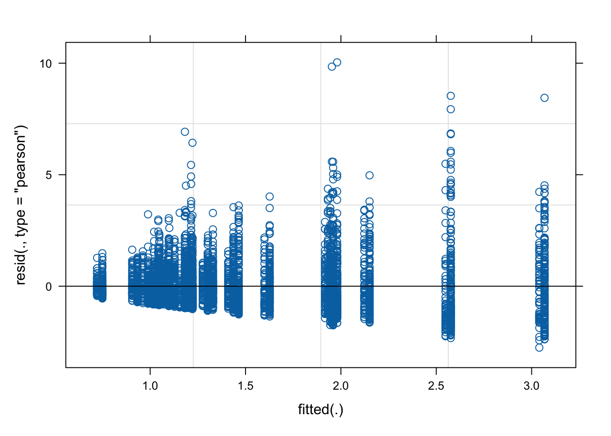
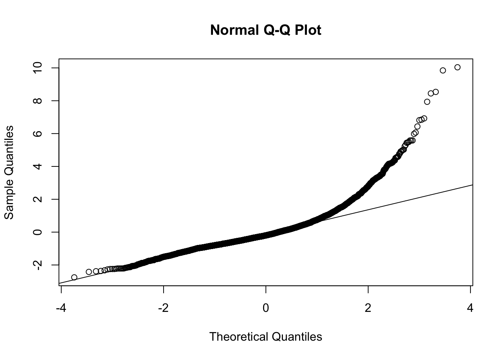
As you can see, we have significant skewness and heteroskedasticity. One way to try to help that is by replacing reaction time with its log.
mod <- lme4::lmer(log(rt) ~ voice + (1|pp), data = aa) #here it is good we removed very small values
summary(mod)## Linear mixed model fit by REML ['lmerMod']
## Formula: log(rt) ~ voice + (1 | pp)
## Data: aa
##
## REML criterion at convergence: 10836.6
##
## Scaled residuals:
## Min 1Q Median 3Q Max
## -3.4587 -0.6703 0.0208 0.6994 3.5437
##
## Random effects:
## Groups Name Variance Std.Dev.
## pp (Intercept) 0.1114 0.3338
## Residual 0.4016 0.6337
## Number of obs: 5572, groups: pp, 24
##
## Fixed effects:
## Estimate Std. Error t value
## (Intercept) 0.11635 0.06885 1.690
## voiceself -0.01102 0.01959 -0.563
##
## Correlation of Fixed Effects:
## (Intr)
## voiceself -0.071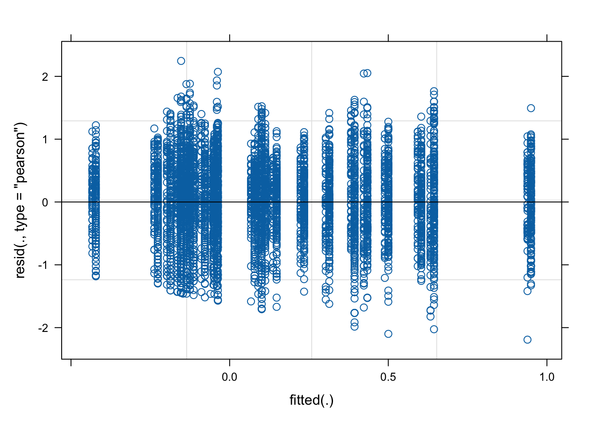
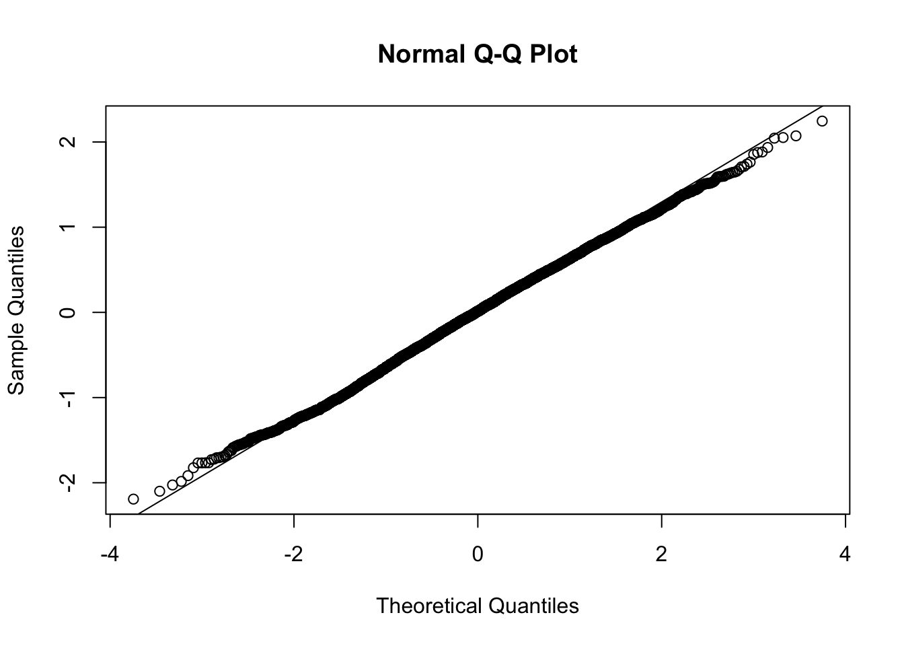
We continue with mod, even though interpretation on the log scale is always more challenging.
Note that lme4 does not provide a \(p\)-value for the primary object of interest, which is voiceself. To get a \(p\)-value, we can use the lm erTest package, which estimates the degrees of freedom for the t-test.
##
## Attaching package: 'lmerTest'## The following object is masked from 'package:lme4':
##
## lmer## The following object is masked from 'package:stats':
##
## step## Linear mixed model fit by REML. t-tests use Satterthwaite's method [
## lmerModLmerTest]
## Formula: log(rt) ~ voice + (1 | pp)
## Data: aa
##
## REML criterion at convergence: 10836.6
##
## Scaled residuals:
## Min 1Q Median 3Q Max
## -3.4587 -0.6703 0.0208 0.6994 3.5437
##
## Random effects:
## Groups Name Variance Std.Dev.
## pp (Intercept) 0.1114 0.3338
## Residual 0.4016 0.6337
## Number of obs: 5572, groups: pp, 24
##
## Fixed effects:
## Estimate Std. Error df t value Pr(>|t|)
## (Intercept) 0.11635 0.06885 23.24259 1.690 0.104
## voiceself -0.01102 0.01959 5547.05374 -0.563 0.574
##
## Correlation of Fixed Effects:
## (Intr)
## voiceself -0.071We fail to reject the null hypothesis that there is no difference in mean log reaction time between self and other voices, \(p = 0.41\).
9.6 February 17
Let’s return to the model \[\begin{equation} \text{RT}_{ij} = \gamma_{00} + \beta_1 \text{Voice}_{ij} + u_{0i} + \epsilon_{ij} \tag{9.1} \end{equation}\] We use the coefficients that we estimated in the previous lecture to simulate data from this model, and then we will fit the same model to the simulated data to see if we can recover the parameters that we used to simulate the data. This is a good way to check our understanding of the model and the estimation process. If you can do this reliably with all of the models we cover in this class, you will be in a very good position to understand the models and to apply them to your own data.
Recall that we had the following model (before taking logs):
library(lme4)
aa <- ardata::accent |>
mutate(pp = factor(pp))
mod <- lme4::lmer(rt ~ voice + (1|pp), data = aa)
summary(mod)## Linear mixed model fit by REML ['lmerMod']
## Formula: rt ~ voice + (1 | pp)
## Data: aa
##
## REML criterion at convergence: 16945.1
##
## Scaled residuals:
## Min 1Q Median 3Q Max
## -2.6414 -0.6020 -0.1848 0.3715 9.6194
##
## Random effects:
## Groups Name Variance Std.Dev.
## pp (Intercept) 0.3354 0.5791
## Residual 1.0888 1.0434
## Number of obs: 5760, groups: pp, 24
##
## Fixed effects:
## Estimate Std. Error t value
## (Intercept) 1.42074 0.11927 11.912
## voiceself -0.02617 0.03175 -0.824
##
## Correlation of Fixed Effects:
## (Intr)
## voiceself -0.067Let’s simulate the data. It is nice to be able to read the estimates from the table by eye or to do it by code. Let’s do it by code, which is more reliable, and check our understanding by looking at the values and making sure they match what we think it should.
## [1] 1.420738## [1] -0.02616764tau <- as.data.frame(VarCorr(mod))$vcov[1] #between-participant variance
tau #NOTE: we will have to take square root of this inside of rnorm!## [1] 0.3353699sigma <- as.data.frame(VarCorr(mod))$vcov[2] #within-participant variance
sigma #NOTE: we will have to take square root of this inside of rnorm!## [1] 1.088765We pause here to note that these are all of the parameters of the model. The values of \(u_i\) are not considered paramaters of the model; they are considered random effects, and we will simulate them as random draws from a normal distribution with mean 0 and variance \(\tau^2\). The values of \(\epsilon_{ij}\) are also not considered parameters of the model; they are considered random errors, and we will simulate them as random draws from a normal distribution with mean 0 and variance \(\sigma^2\).
Now we can simulate the data. We will simulate data for 24 participants, with 240 observations per participant, which is the same as in the original data set. Note that this simulation makes explicit that we do not model sentence or speaker at all. We are only modeling the dependence on pp (participant) and voice.
u <- rnorm(24, mean = 0, sd = sqrt(tau)) #random intercepts for each participant
n <- 24 * 240 #total number of observations
sim_data <- data.frame(pp = factor(rep(1:24, each = 240)),
voice = rep(c("self", "other"), times = c(180, 60)))
#we assume 180 self ratings and 60 other ratings per participant, which is consistent with the original data set):
head(table(aa$pp, aa$voice))##
## other self
## 1 180 60
## 2 180 60
## 3 180 60
## 4 180 60
## 5 180 60
## 6 180 60## # A tibble: 48 × 3
## pp voice n
## <fct> <fct> <int>
## 1 1 other 180
## 2 1 self 60
## 3 2 other 180
## 4 2 self 60
## 5 3 other 180
## 6 3 self 60
## 7 4 other 180
## 8 4 self 60
## 9 5 other 180
## 10 5 self 60
## # ℹ 38 more rowssim_data <- sim_data |>
mutate(rt = gamma +
beta * case_when(voice == "self" ~ 1,
TRUE ~ 0) +
u[as.numeric(pp)] +
rnorm(n(), mean = 0, sd = sqrt(sigma))
)
lmerTest::lmer(rt ~ voice + (1|pp), data = sim_data) |>
summary()## Linear mixed model fit by REML. t-tests use Satterthwaite's method [
## lmerModLmerTest]
## Formula: rt ~ voice + (1 | pp)
## Data: sim_data
##
## REML criterion at convergence: 17213.4
##
## Scaled residuals:
## Min 1Q Median 3Q Max
## -3.5917 -0.6549 -0.0131 0.6794 3.7931
##
## Random effects:
## Groups Name Variance Std.Dev.
## pp (Intercept) 0.395 0.6285
## Residual 1.140 1.0678
## Number of obs: 5760, groups: pp, 24
##
## Fixed effects:
## Estimate Std. Error df t value Pr(>|t|)
## (Intercept) 1.46318 0.13133 24.66931 11.141 4.09e-11 ***
## voiceself -0.01649 0.03249 5735.00000 -0.508 0.612
## ---
## Signif. codes: 0 '***' 0.001 '**' 0.01 '*' 0.05 '.' 0.1 ' ' 1
##
## Correlation of Fixed Effects:
## (Intr)
## voiceself -0.186## gamma beta tau sigma
## 1.42073784 -0.02616764 0.33536985 1.088764829.6.1 Adding random speaker and sentence effects
Let’s return to the accent data set and make a more realistic model of reaction time, which takes into account the speaker and the sentence as well. We will model the speaker and sentence number as random effects as well. The model will be
\[\begin{equation}
\text{RT}_{ijk} = \gamma_{000} + \beta_1 \text{Voice}_{ijk} + u_{0i} + v_{0j} + w_{0k} + \epsilon_{ijk}
\end{equation}\]
where
- \(\text{RT}_{ijk}\) is the reaction time for participant \(i\) on sentence \(j\) with speaker \(k\)
- \(\gamma_{000}\) is the mean RT for self voice (the reference category)
- \(\beta_1\) is the difference in mean RT between rating other voices and self voice
- \(u_{0i} \sim N(0, \tau^2)\) represents between-participant variance
- \(v_{0j} \sim N(0, \nu^2)\) represents between-sentence variance
- \(w_{0k} \sim N(0, \omega^2)\) represents between-speaker variance
- \(\epsilon_{ijk} \sim N(0, \sigma^2)\) represents within-participant variance
- All random effects are assumed to be independent
## # A tibble: 6 × 15
## pair pp group sentence spk_thisTrial voice wavfile trial rating rt
## <fct> <fct> <fct> <int> <int> <fct> <fct> <int> <int> <dbl>
## 1 1_1 1 E 5 1 self spk1_5.wav 68 1 0.870
## 2 1_1 1 E 30 1 self spk1_30.wav 46 2 0.837
## 3 1_1 1 E 35 1 self spk1_35.wav 126 1 0.386
## 4 1_1 1 E 41 1 self spk1_41.wav 130 3 1.59
## 5 1_1 1 E 18 1 self spk1_18.wav 8 2 0.988
## 6 1_1 1 E 21 1 self spk1_21.wav 133 2 2.31
## # ℹ 5 more variables: participant <int>, voiceC <dbl>, trialC <dbl>,
## # recognition <dbl>, simRatingPair <dbl>## Linear mixed model fit by REML ['lmerMod']
## Formula: rt ~ voice + (1 | pp) + (1 | sentence) + (1 | spk_thisTrial)
## Data: aa
##
## REML criterion at convergence: 16860.9
##
## Scaled residuals:
## Min 1Q Median 3Q Max
## -2.6097 -0.5900 -0.1899 0.3549 9.6260
##
## Random effects:
## Groups Name Variance Std.Dev.
## sentence (Intercept) 0.01995 0.1412
## spk_thisTrial (Intercept) 0.01683 0.1297
## pp (Intercept) 0.33475 0.5786
## Residual 1.05628 1.0278
## Number of obs: 5760, groups: sentence, 60; spk_thisTrial, 24; pp, 24
##
## Fixed effects:
## Estimate Std. Error t value
## (Intercept) 1.42074 0.12340 11.514
## voiceself -0.02617 0.03127 -0.837
##
## Correlation of Fixed Effects:
## (Intr)
## voiceself -0.063 lme4::lmer(log(rt + .02) ~ voice + (1|pp) + (1|sentence) + (1|spk_thisTrial), data = aa) |>
summary()## Linear mixed model fit by REML ['lmerMod']
## Formula:
## log(rt + 0.02) ~ voice + (1 | pp) + (1 | sentence) + (1 | spk_thisTrial)
## Data: aa
##
## REML criterion at convergence: 12330.6
##
## Scaled residuals:
## Min 1Q Median 3Q Max
## -5.3205 -0.5834 0.0438 0.6389 3.7773
##
## Random effects:
## Groups Name Variance Std.Dev.
## sentence (Intercept) 0.02028 0.1424
## spk_thisTrial (Intercept) 0.01688 0.1299
## pp (Intercept) 0.13697 0.3701
## Residual 0.47717 0.6908
## Number of obs: 5760, groups: sentence, 60; spk_thisTrial, 24; pp, 24
##
## Fixed effects:
## Estimate Std. Error t value
## (Intercept) 0.071060 0.082819 0.858
## voiceself -0.006464 0.021020 -0.308
##
## Correlation of Fixed Effects:
## (Intr)
## voiceself -0.0639.6.2 Random intercepts with continuous predictor
Let’s consider the sleepstudy data set in the lme4 package. This data set contains reaction times for 18 subjects who were sleep deprived for 10 days. We will model the reaction time as a function of the number of days of sleep deprivation, with random intercepts for each subject. Let’s look at the data.
We can fit a regression line to the data, using the same slope but a different intercept for each subject. How do we do that? Try to do it yourself before looking at the code below. This is a good refresher for what we were doing earlier in the class.
ss <- lme4::sleepstudy |>
janitor::clean_names()
model <- lm(reaction ~ days + subject, data = ss)
pred <- broom::augment(model)
model2 <- lmer(reaction ~ days + (1|subject), data = ss)
pred2 <- broom.mixed::augment(model2) # note: broom.mixed, not broom
ggplot(pred, aes(x = days, y = .fitted, color = subject)) +
geom_line(alpha = 0.8) +
#geom_line(data = pred2, aes(x = days, y = .fitted, color = subject), alpha = 0.3) + #uncomment to see the random slopes
labs(x = "Days", y = "Reaction") +
geom_point(aes(y = reaction)) +
theme_minimal()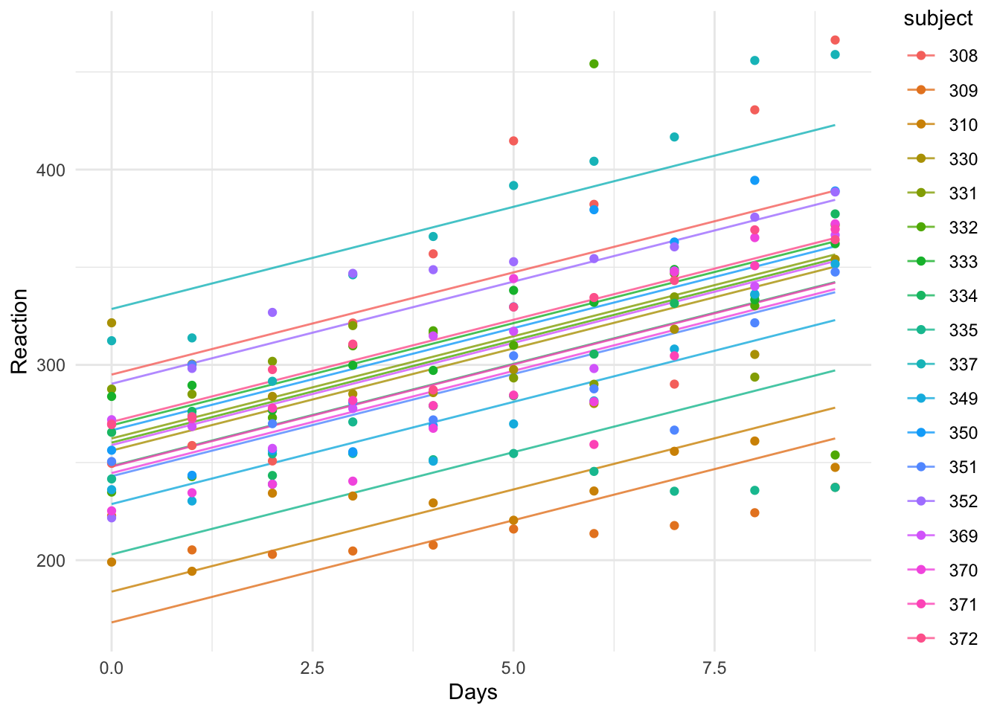
This would be fine if we were only interested in these subjects. More likely, though, we are imagining the subjects to be a random sample from a larger population, and we want to treat the intercept as a random effect and the slope as a fixed effect. This way, we can make inferences about the overall effect of days of sleep deprivation on reaction time, while accounting for the fact that each subject has their own baseline reaction time (random intercept). The model would be \[ \text{reaction}_{ij} = \gamma_{00} + \beta_1 \text{days}_{ij} + u_{0i} + \epsilon_{ij} \] where
-\(\gamma_{00}\) is the mean reaction time for a subject with 0 days of sleep deprivation, -\(\beta_1\) is the fixed effect of days of sleep deprivation on reaction time -\(u_{0i} \sim N(0, \tau^2)\) represents the random intercept for subject \(i\) -\(\epsilon_{ij} \sim N(0, \sigma^2)\) represents the error term for observation \(j\) of subject \(i\) -\(\tau\) and \(\sigma\) are the variances of the random intercepts and the error term, respectively. -We assume independence between the random intercepts and the error term, and we also assume that the random intercepts are independent across subjects.
In order to build such a model, we use lme4::lmer as follows:
## Linear mixed model fit by REML ['lmerMod']
## Formula: reaction ~ days + (1 | subject)
## Data: ss
##
## REML criterion at convergence: 1786.5
##
## Scaled residuals:
## Min 1Q Median 3Q Max
## -3.2257 -0.5529 0.0109 0.5188 4.2506
##
## Random effects:
## Groups Name Variance Std.Dev.
## subject (Intercept) 1378.2 37.12
## Residual 960.5 30.99
## Number of obs: 180, groups: subject, 18
##
## Fixed effects:
## Estimate Std. Error t value
## (Intercept) 251.4051 9.7467 25.79
## days 10.4673 0.8042 13.02
##
## Correlation of Fixed Effects:
## (Intr)
## days -0.371We see that \(\gamma_{00}\) is estimated to be 251.405, which is the mean reaction time for a subject with 0 days of sleep deprivation. The fixed effect of days of sleep deprivation on reaction time is estimated to be 10.467, which means that for each additional day of sleep deprivation, the reaction time increases by about 10.467 milliseconds on average, after accounting for the random intercepts for each subject. The variance of the random intercepts is estimated to be 1378.2, and the variance of the error term is estimated to be 960.5. The ICC ( Intraclass Correlation Coefficient) can be calculated as \(\frac{1378.2}{1378.2 + 960.5} \approx 0.59\), which indicates that about 59% of the total variance in reaction time is attributable to differences between subjects, while the remaining 41% is due to within-subject variation (e.g., differences across days and random error). ICC stands for Intraclass Correlation Coefficient, and it is a measure of the proportion of total variance that is attributable to between-group (or between-subject) variance in a mixed effects model. It ranges from 0 to 1, where a value close to 0 indicates that most of the variance is within groups (or subjects), while a value close to 1 indicates that most of the variance is between groups (or subjects).
We also see that \(\hat \beta_1\) is significant (\(t = 13.02, \text{se} = 0.8042\)), which suggests that there is a significant association between days of sleep deprivation and reaction time, even after accounting for the random intercepts for each subject.
Let’s check the residuals of our model:
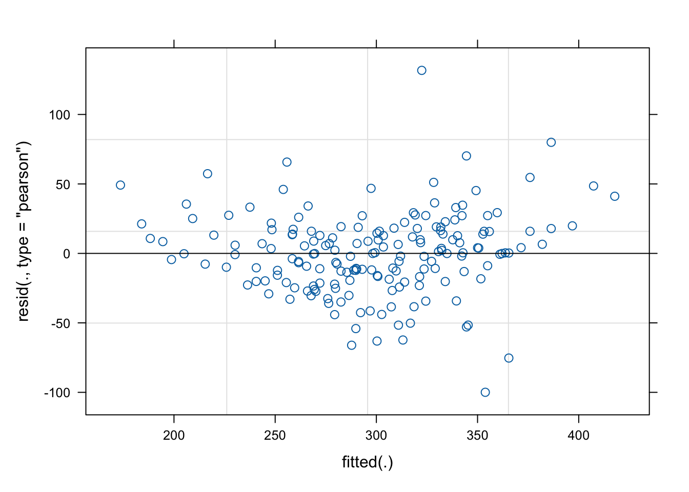
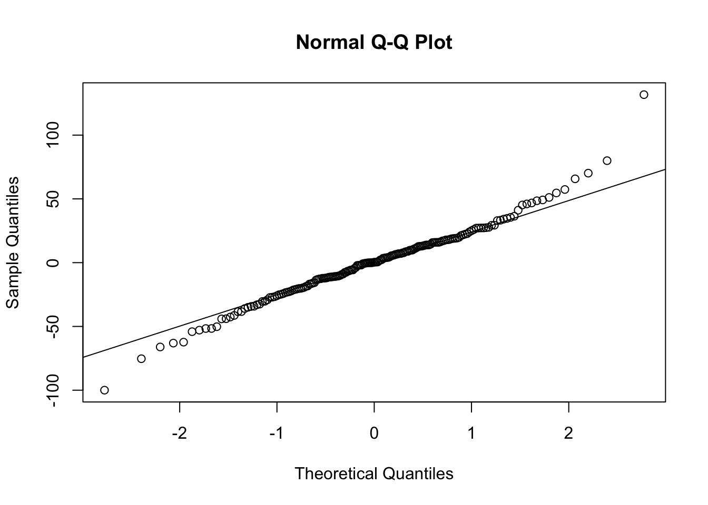
Well, the residuals appear approximately normal, but they also appear to have a U shape in the residuals vs fitted. We will examine that again when we consider random slopes as well as random intercepts. For now, we will continue with this model, which only has random intercepts.
One characteristic of mixed effect models is that the estimates for the intercepts of individual subjects are “shrunk” towards the overall mean. This is because the model borrows strength from the other subjects to estimate the intercepts, which can lead to more accurate estimates, especially for subjects with fewer observations. This is known as “partial pooling” or “shrinkage”. The amount of shrinkage depends on the variance of the random intercepts and the number of observations for each subject. Subjects with more observations will have less shrinkage, while subjects with fewer observations will have more shrinkage.
We can plot the fixed effect model and the random effect model on the same graph to illustrate this.
pred2 <- broom.mixed::augment(mod)
ggplot(pred, aes(x = days, y = .fitted, color = subject)) +
geom_line(alpha = 0.8) +
geom_line(data = pred2, aes(x = days, y = .fitted, color = subject), alpha = 0.3) +
labs(x = "Days", y = "Reaction") +
geom_point(aes(y = reaction)) +
theme_minimal()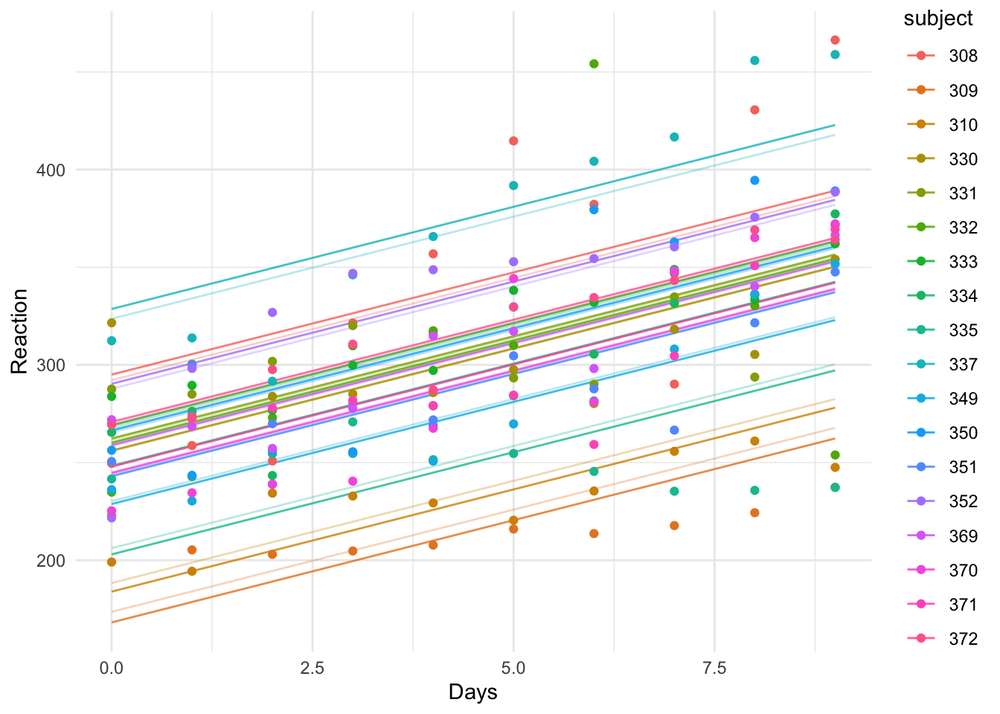
We see that the random effects lines (which are lighter) have intercepts which are closer to the overall mean of all of the intercepts than the fixed effect line is.
9.6.3 Adding random slopes
We continue with the sleepstudy data set in the lme4 package. Let’s look once more at a scatterplot with lines of best fit for each subject.
ggplot(ss, aes(x = days, y = reaction, color = subject)) +
geom_point() +
geom_smooth(method = "lm", se = F)## `geom_smooth()` using formula = 'y ~ x'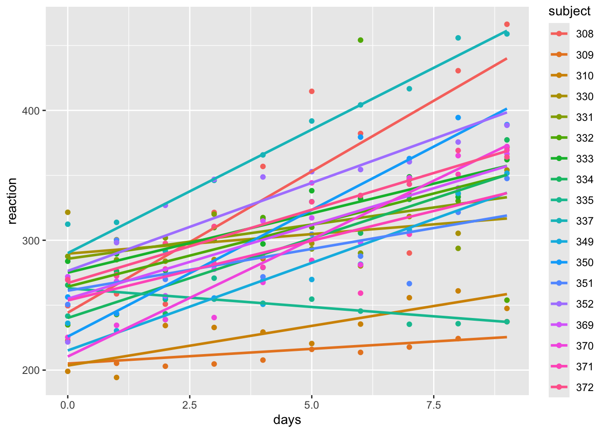
Based on this plot, it seems that we have potentially different intercepts and slopes for each subject. Let’s fit a linear model with an interaction between days and subject. We will have 18 intercepts and 18 slopes, which is a lot of parameters to estimate with only 180 observations. (It is five observations per parameter estimated - how much confidence would you have in an estimated mean based off of 5 observations? Mathematically, it is fine. But in practice, it is not ideal.)
##
## Call:
## lm(formula = reaction ~ days * subject, data = ss)
##
## Residuals:
## Min 1Q Median 3Q Max
## -106.397 -10.692 -0.177 11.417 132.510
##
## Coefficients:
## Estimate Std. Error t value Pr(>|t|)
## (Intercept) 244.193 15.042 16.234 < 2e-16 ***
## days 21.765 2.818 7.725 1.74e-12 ***
## subject309 -39.138 21.272 -1.840 0.067848 .
## subject310 -40.708 21.272 -1.914 0.057643 .
## subject330 45.492 21.272 2.139 0.034156 *
## subject331 41.546 21.272 1.953 0.052749 .
## subject332 20.059 21.272 0.943 0.347277
## subject333 30.826 21.272 1.449 0.149471
## subject334 -4.030 21.272 -0.189 0.850016
## subject335 18.842 21.272 0.886 0.377224
## subject337 45.911 21.272 2.158 0.032563 *
## subject349 -29.081 21.272 -1.367 0.173728
## subject350 -18.358 21.272 -0.863 0.389568
## subject351 16.954 21.272 0.797 0.426751
## subject352 32.179 21.272 1.513 0.132535
## subject369 10.775 21.272 0.507 0.613243
## subject370 -33.744 21.272 -1.586 0.114870
## subject371 9.443 21.272 0.444 0.657759
## subject372 22.852 21.272 1.074 0.284497
## days:subject309 -19.503 3.985 -4.895 2.61e-06 ***
## days:subject310 -15.650 3.985 -3.928 0.000133 ***
## days:subject330 -18.757 3.985 -4.707 5.84e-06 ***
## days:subject331 -16.499 3.985 -4.141 5.88e-05 ***
## days:subject332 -12.198 3.985 -3.061 0.002630 **
## days:subject333 -12.623 3.985 -3.168 0.001876 **
## days:subject334 -9.512 3.985 -2.387 0.018282 *
## days:subject335 -24.646 3.985 -6.185 6.07e-09 ***
## days:subject337 -2.739 3.985 -0.687 0.492986
## days:subject349 -8.271 3.985 -2.076 0.039704 *
## days:subject350 -2.261 3.985 -0.567 0.571360
## days:subject351 -15.331 3.985 -3.848 0.000179 ***
## days:subject352 -8.198 3.985 -2.057 0.041448 *
## days:subject369 -10.417 3.985 -2.614 0.009895 **
## days:subject370 -3.709 3.985 -0.931 0.353560
## days:subject371 -12.576 3.985 -3.156 0.001947 **
## days:subject372 -10.467 3.985 -2.627 0.009554 **
## ---
## Signif. codes: 0 '***' 0.001 '**' 0.01 '*' 0.05 '.' 0.1 ' ' 1
##
## Residual standard error: 25.59 on 144 degrees of freedom
## Multiple R-squared: 0.8339, Adjusted R-squared: 0.7936
## F-statistic: 20.66 on 35 and 144 DF, p-value: < 2.2e-16We can see that it appears that both the intercept and the slope change with the subject. Following what we had done before, we would be done with our modeling. Here are some issues:
- We have no way to predict the reaction time for a new subject that is not in our data set, because we have no estimate of the intercept or slope for that subject.
- How would we answer the following question: is reaction time associated with number of days of sleep deprivation? We could look at the overall F-test for the model, but that is not really testing the association between reaction time and days of sleep deprivation. It is testing whether there is an association between reaction time and days of sleep deprivation for each subject. We would like to be able to test the overall association between reaction time and days of sleep deprivation, while accounting for the fact that we have different intercepts and slopes for each subject. Based on the plot, it seems like for some subjects, the reaction time might be getting faster with more sleep deprivation.
- We have a lot of parameters in this model, which can lead to overfitting. We haven’t really talked much about overfitting in this class yet. But, when we are looking for a parsimonious model by variable selection, we are trying to avoid overfitting. In this case, we have a lot of parameters, and we are not really interested in the individual intercepts and slopes for each subject. We are more interested in the overall association between reaction time and days of sleep deprivation, while accounting for the fact that we have (possibly) different intercepts and slopes for each subject.
What is wrong with forgetting that we have the same subjects, and running the following regression?
##
## Call:
## lm(formula = reaction ~ days, data = ss)
##
## Residuals:
## Min 1Q Median 3Q Max
## -110.848 -27.483 1.546 26.142 139.953
##
## Coefficients:
## Estimate Std. Error t value Pr(>|t|)
## (Intercept) 251.405 6.610 38.033 < 2e-16 ***
## days 10.467 1.238 8.454 9.89e-15 ***
## ---
## Signif. codes: 0 '***' 0.001 '**' 0.01 '*' 0.05 '.' 0.1 ' ' 1
##
## Residual standard error: 47.71 on 178 degrees of freedom
## Multiple R-squared: 0.2865, Adjusted R-squared: 0.2825
## F-statistic: 71.46 on 1 and 178 DF, p-value: 9.894e-15This model is not accounting for the fact that we have repeated measurements for each subject. It is treating each observation as independent, which is not the case. This can lead to underestimated standard errors and inflated type I error rates. We need a way to account for the fact that we have repeated measurements for each subject, and that the intercepts and slopes may vary by subject. This is where mixed models come in, which we will cover in the next lecture.
9.7 February 19
9.7.1 Random Slopes
When we have one predictor with random intercepts and slopes, the model can be written like this:
\[ y_{ij} = \beta_0 + \beta_1 x_{ij} + b_{0i} + b_{1i} x_{ij} + \epsilon_{ij} \] where \(b_{0i}\) is the random intercept for group \(i\), and \(b_{1i}\) is the random slope for predictor \(x\) in group \(i\). We assume that the random effects \((b_{0i}, b_{1i})\) are jointly normally distributed with mean 0 and covariance matrix \(\Sigma\), and that the errors \(\epsilon_{ij}\) are normally distributed with mean 0 and variance \(\sigma^2\). The random effects and errors are assumed to be independent of each other. Note that we could also combine the fixed effects with the random effects to say that the intercept has mean \(\beta_0\) and the slope has mean \(\beta_1\), together with the covariance informarion.
We can fit the data by using lmer as follows:
## Linear mixed model fit by REML ['lmerMod']
## Formula: reaction ~ days + (1 + days | subject)
## Data: ss
##
## REML criterion at convergence: 1743.6
##
## Scaled residuals:
## Min 1Q Median 3Q Max
## -3.9536 -0.4634 0.0231 0.4634 5.1793
##
## Random effects:
## Groups Name Variance Std.Dev. Corr
## subject (Intercept) 612.10 24.741
## days 35.07 5.922 0.07
## Residual 654.94 25.592
## Number of obs: 180, groups: subject, 18
##
## Fixed effects:
## Estimate Std. Error t value
## (Intercept) 251.405 6.825 36.838
## days 10.467 1.546 6.771
##
## Correlation of Fixed Effects:
## (Intr)
## days -0.138We obtain the following estimates for the parameters of the model:
- \(\hat \beta_0 = 251.405\) (mean intercept across subjects)
- \(\hat \beta_1 = 10.467\) (mean slope across subjects)
- \(\hat \tau_0^2 = 612.1\) (variance of random intercepts)
- \(\hat \tau_1^2 = 35\) (variance of random slopes)
- \(\hat \sigma^2 = 654.94\) (variance of residuals)
- \(\hat \rho = 0.07\) (correlation between random intercepts and slopes)
Note that this model has one additional parameter which we didn’t specify in our mathematical model above, which is the correlation between random intercepts and slopes. A positive value for this correlation indicates that subjects with higher baseline reaction times (higher random intercepts) tend to have steeper increases in reaction time with more days of sleep deprivation (higher random slopes), while a negative value would indicate the opposite. In this case, the correlation is close to zero, suggesting that there is little relationship between the random intercepts and slopes in this data set. If we want to fit a model that does not include the correlation, we can use the following:
mod <- lme4::lmer(reaction ~ days + (1 + days||subject), data = ss) #the || syntax forces the correlation to be zero
summary(mod)## Linear mixed model fit by REML ['lmerMod']
## Formula: reaction ~ days + ((1 | subject) + (0 + days | subject))
## Data: ss
##
## REML criterion at convergence: 1743.7
##
## Scaled residuals:
## Min 1Q Median 3Q Max
## -3.9626 -0.4625 0.0204 0.4653 5.1860
##
## Random effects:
## Groups Name Variance Std.Dev.
## subject (Intercept) 627.57 25.051
## subject.1 days 35.86 5.988
## Residual 653.58 25.565
## Number of obs: 180, groups: subject, 18
##
## Fixed effects:
## Estimate Std. Error t value
## (Intercept) 251.405 6.885 36.513
## days 10.467 1.560 6.712
##
## Correlation of Fixed Effects:
## (Intr)
## days -0.184There is very little change in the estimated parameter values.
One interesting question that can be asked with a model with random slopes is: what proportion of subjects have a positive slope? In other words, what proportion of subjects have reaction times that increase with more days of sleep deprivation? We can answer this question by looking at the distribution of the random slopes.
random_slopes <- ranef(mod)$subject$days #this gives us the random slope for each subject
mean_slope <- fixef(mod)["days"] #this gives us the fixed effect slope
#the total slope for each subject is the fixed effect slope plus the random slope for that subject
total_slopes <- mean_slope + random_slopes
total_slopes## [1] 19.7907830 1.8681102 5.0794915 5.4986357 7.2733482 10.1587920
## [7] 10.1800781 11.5832770 -0.4386895 19.0949087 11.7479752 17.2236923
## [13] 7.3921504 13.9794982 11.3403373 15.4510769 9.4619922 11.7256896What is our estimate of the total percentage of the total population that has a negative slope? We can use the normal distribution to answer this question, because the random slopes are assumed to be normally distributed.
pnorm(0, mean = mean_slope, sd = sqrt(35)) #35 is the variance of the random slopes, so we take the square root to get the standard deviation## [1] 0.03842239We see that about 4 percent of the population is estimated to have a negative slope, which means that their reaction times decrease with more days of sleep deprivation. This is an interesting finding, and it highlights the importance of looking at the random effects in a mixed model, rather than just the fixed effects. The fixed effect tells us about the average effect across all subjects, but the random effects tell us about the variability in the effect across subjects. In this case, while the average effect of days of sleep deprivation on reaction time is positive, there is a small proportion of subjects for whom the effect is negative.
What is a confidence interval for the main slope effect? We can use the standard error of the fixed effect slope to construct a confidence interval. The standard error is given in the summary output of the model, or we can use emmeans or lmerTest to get it. Let’s use lmerTest to get the confidence interval.
library(lmerTest)
mod2 <- lmerTest::lmer(reaction ~ days + (1 + days||subject), data = ss)
summary(mod2)## Linear mixed model fit by REML. t-tests use Satterthwaite's method [
## lmerModLmerTest]
## Formula: reaction ~ days + (1 + days || subject)
## Data: ss
##
## REML criterion at convergence: 1743.7
##
## Scaled residuals:
## Min 1Q Median 3Q Max
## -3.9626 -0.4625 0.0204 0.4653 5.1860
##
## Random effects:
## Groups Name Variance Std.Dev.
## subject (Intercept) 627.57 25.051
## subject.1 days 35.86 5.988
## Residual 653.58 25.565
## Number of obs: 180, groups: subject, 18
##
## Fixed effects:
## Estimate Std. Error df t value Pr(>|t|)
## (Intercept) 251.405 6.885 18.156 36.513 < 2e-16 ***
## days 10.467 1.560 18.156 6.712 2.59e-06 ***
## ---
## Signif. codes: 0 '***' 0.001 '**' 0.01 '*' 0.05 '.' 0.1 ' ' 1
##
## Correlation of Fixed Effects:
## (Intr)
## days -0.184## 2.5 % 97.5 %
## days 7.410587 13.52399confint(mod2, parm = "days", method = "boot", nsim = 1000) #doesn't work as well when we have a small number of groups, 18 is borderline but it is more robust to non-normality and heteroskedasticity than the Wald confidence interval## Computing bootstrap confidence intervals ...##
## 3 message(s): boundary (singular) fit: see help('isSingular')## 2.5 % 97.5 %
## days 7.473151 13.46046## Computing profile confidence intervals ...## 2.5 % 97.5 %
## days 7.334067 13.600519.7.2 Comparing models
We can use ANOVA to compare nested models. For example, we can compare the model with random slopes to the model without random slopes, or we can compare the model with random slopes and random intercepts to the model with only random intercepts. We can also compare the model with correlated random effects to the model with uncorrelated random effects. Let’s see how to do this in R.
mod_random_slopes <- lmer(reaction ~ days + (1 + days|subject), data = ss)
mod_random_intercepts <- lmer(reaction ~ days + (1|subject), data = ss)
anova(mod_random_intercepts, mod_random_slopes)## refitting model(s) with ML (instead of REML)## Data: ss
## Models:
## mod_random_intercepts: reaction ~ days + (1 | subject)
## mod_random_slopes: reaction ~ days + (1 + days | subject)
## npar AIC BIC logLik -2*log(L) Chisq Df Pr(>Chisq)
## mod_random_intercepts 4 1802.1 1814.8 -897.04 1794.1
## mod_random_slopes 6 1763.9 1783.1 -875.97 1751.9 42.139 2 7.072e-10
##
## mod_random_intercepts
## mod_random_slopes ***
## ---
## Signif. codes: 0 '***' 0.001 '**' 0.01 '*' 0.05 '.' 0.1 ' ' 1In general, the null hypothesis being tested is that all of the extra parameters in the larger model are zero versus at least one of the parameters is not zero. So, a \(p\)-value less than 0.05 is evidence that the larger model is a significantly better fit to the data than the smaller model, which suggests that at least one of the extra parameters in the larger model is not zero. In this case, we are testing whether the variance of the random slopes is zero, which is equivalent to testing whether the random slopes are necessary to explain the variability in the data. If we reject the null hypothesis, we can conclude that there is significant variability in the slopes across subjects, and that the model with random slopes fits significantly better than the model with only random intercepts. If we fail to reject the null hypothesis, we can conclude that there is not enough evidence to suggest that there is significant variability in the slopes across subjects, and that the model with only random intercepts may be sufficient to explain the variability in the data. We can also look at the AIC or BIC values for the two models, which are measures of model fit that penalize for the number of parameters in the model. The model with the lower AIC or BIC value is generally considered to be the better fitting model. In this case, we would expect the model with random slopes to have a lower AIC and BIC value than the model with only random intercepts, which would further support the conclusion that the model with random slopes fits significantly better than the model with only random intercepts.
We conclude that the model with random slopes fits significantly better than the model with only random intercepts, which suggests that there is significant variability in the slopes across subjects. We can also compare the model with correlated random effects to the model with uncorrelated random effects.
Now let’s compare the model with correlated random effects to the model with uncorrelated random effects.
mod_correlated <- lmer(reaction ~ days + (1 + days|subject), data = ss, REML = F)
mod_uncorrelated <- lmer(reaction ~ days + (1 + days||subject), data = ss, REML = F)
anova(mod_uncorrelated, mod_correlated)## Data: ss
## Models:
## mod_uncorrelated: reaction ~ days + (1 + days || subject)
## mod_correlated: reaction ~ days + (1 + days | subject)
## npar AIC BIC logLik -2*log(L) Chisq Df Pr(>Chisq)
## mod_uncorrelated 5 1762.0 1778.0 -876.00 1752.0
## mod_correlated 6 1763.9 1783.1 -875.97 1751.9 0.0639 1 0.8004The model with uncorrelated random effects fits significantly better than the model with correlated random effects, which suggests that there is not a significant correlation between the random intercepts and random slopes in this data set. This is consistent with the estimate of the correlation that we obtained from the model with correlated random effects, which was close to zero. When we have different fixed effects, we should not use REML = T to compare the models, because the fixed effects are different. Note that anova will fix this for us if we forget.
mod <- lmer(reaction ~ days + (1|subject), data = ss, REML = F)
mod2 <- lmer(reaction ~ 1 + (1|subject), data = ss, REML = F)
anova(mod2, mod)## Data: ss
## Models:
## mod2: reaction ~ 1 + (1 | subject)
## mod: reaction ~ days + (1 | subject)
## npar AIC BIC logLik -2*log(L) Chisq Df Pr(>Chisq)
## mod2 3 1916.5 1926.1 -955.27 1910.5
## mod 4 1802.1 1814.8 -897.04 1794.1 116.46 1 < 2.2e-16 ***
## ---
## Signif. codes: 0 '***' 0.001 '**' 0.01 '*' 0.05 '.' 0.1 ' ' 1The model with the fixed effect of days fits significantly better than the model with only a random intercept. We can re-run this with REML = T and see we get the same answer, with a message.
mod <- lmer(reaction ~ days + (1|subject), data = ss, REML = T)
mod2 <- lmer(reaction ~ 1 + (1|subject), data = ss, REML = T)
anova(mod2, mod)## refitting model(s) with ML (instead of REML)## Data: ss
## Models:
## mod2: reaction ~ 1 + (1 | subject)
## mod: reaction ~ days + (1 | subject)
## npar AIC BIC logLik -2*log(L) Chisq Df Pr(>Chisq)
## mod2 3 1916.5 1926.1 -955.27 1910.5
## mod 4 1802.1 1814.8 -897.04 1794.1 116.46 1 < 2.2e-16 ***
## ---
## Signif. codes: 0 '***' 0.001 '**' 0.01 '*' 0.05 '.' 0.1 ' ' 19.8 February 24
9.8.1 Beethoven Tempo Example
In this example, we consider Beethoven symphony tempo data from a ppaer by Martin-Castro and Ucar4. This data is found in ardata::beethoven_tempos. Let’s look at the data.
## # A tibble: 196,544 × 23
## symphony movement conductor n start duration tempo section p_s avgdur
## <int> <int> <fct> <int> <dbl> <dbl> <dbl> <dbl> <dbl> <dbl>
## 1 1 1 Abbado, Cl… 22 63.5 30.2 97.5 1 93.5 29.6
## 2 1 1 Abbado, Cl… 23 66.5 30.2 104 1 93.5 29.6
## 3 1 1 Abbado, Cl… 24 69.6 30.2 104 1 93.5 29.6
## 4 1 1 Abbado, Cl… 25 72.6 30.2 104 1 93.5 29.6
## 5 1 1 Abbado, Cl… 26 75.6 30.2 104 1 93.5 29.6
## 6 1 1 Abbado, Cl… 27 78.6 30.2 104 1 93.5 29.6
## 7 1 1 Abbado, Cl… 28 81.7 30.2 104 1 93.5 29.6
## 8 1 1 Abbado, Cl… 29 84.7 30.2 104 1 93.5 29.6
## 9 1 1 Abbado, Cl… 30 87.7 30.2 104 1 93.5 29.6
## 10 1 1 Abbado, Cl… 31 90.7 30.2 104 1 93.5 29.6
## # ℹ 196,534 more rows
## # ℹ 13 more variables: p_sc <dbl>, character <chr>, mark <dbl>, beat <int>,
## # bar_tot <int>, bar_rep <int>, bar_1 <int>, tsig <dbl>, p_sce <dbl>,
## # mov_rep <lgl>, p_sd <dbl>, sd <dbl>, ptype <fct>There are quite a few variables; you should spend some time looking at the documentation and understanding the variable names. We will start by averaging tempo over symphony, movement, and mark so that we get independent tempo data.
bbsmall <- ardata::beethoven_tempos |>
group_by(symphony, movement, mark, conductor, ptype) |>
summarize(tempo = mean(tempo, na.rm = T),
sd = mean(sd, na.rm = T)) |>
ungroup()## `summarise()` has grouped output by 'symphony', 'movement', 'mark',
## 'conductor'. You can override using the `.groups` argument.## # A tibble: 1,476 × 7
## symphony movement mark conductor ptype tempo sd
## <int> <int> <dbl> <fct> <fct> <dbl> <dbl>
## 1 1 1 112 Böhm, Karl Romantic 92.6 2.65
## 2 1 1 112 Klemperer, Otto Romantic 90.9 4.72
## 3 1 1 112 Walter, Bruno Romantic 98.6 6.90
## 4 1 1 112 Barenboim, Daniel Romantic 92.9 5.75
## 5 1 1 112 Furtwängler, Wilhelm Romantic 92.5 8.03
## 6 1 1 112 Davis, Colin Romantic 96.7 4.67
## 7 1 1 112 Ferencsik, Janos Romantic 91.2 3.89
## 8 1 1 112 Jochum, Eugen Romantic 95.0 5.21
## 9 1 1 112 Kegel, Herbert Romantic 90.8 5.13
## 10 1 1 112 Cluytens, André Romantic 94.1 5.97
## # ℹ 1,466 more rowsLet’s compute the averge and standard deviation of the tempos for each mark.
bbsmall |>
group_by(mark) |>
summarize(mean_tempo = mean(tempo, na.rm = T),
sd_tempo = sd(tempo, na.rm = T))## # A tibble: 20 × 3
## mark mean_tempo sd_tempo
## <dbl> <dbl> <dbl>
## 1 50 45.8 3.25
## 2 60 54.1 6.87
## 3 66 56.1 6.37
## 4 69 58.1 8.14
## 5 72 72.7 3.45
## 6 76 63.9 5.28
## 7 80 71.8 6.90
## 8 84 72.4 9.27
## 9 88 77.1 6.62
## 10 92 77.0 6.83
## 11 96 83.2 7.05
## 12 100 91.6 5.15
## 13 104 97.5 5.77
## 14 108 93.7 10.4
## 15 112 98.6 6.21
## 16 116 110. 5.79
## 17 120 98.6 9.15
## 18 126 110. 9.80
## 19 132 127. 7.58
## 20 152 141. 6.92We see that all of the mean tempos are lower than the marks, except for the tempo marking of 72. We note that the tempo marking of 72 only occurs in movement 4 of symphony 7.
We also want to have symphony and movement as factors, so that we can use them as random effects in our model.
Let’s create a linear model of tempo on mark and conductor with their interaction.
## # A tibble: 37 × 5
## term estimate std.error statistic p.value
## <chr> <dbl> <dbl> <dbl> <dbl>
## 1 (Intercept) -12.1 1.46 -8.30 2.30e-16
## 2 mark 0.950 0.00917 104. 0
## 3 conductorKlemperer, Otto 2.53 1.68 1.51 1.32e- 1
## 4 conductorWalter, Bruno 1.84 1.68 1.09 2.75e- 1
## 5 conductorBarenboim, Daniel 2.44 1.68 1.45 1.48e- 1
## 6 conductorFurtwängler, Wilhelm 1.36 1.68 0.807 4.20e- 1
## 7 conductorDavis, Colin 2.24 1.68 1.33 1.84e- 1
## 8 conductorFerencsik, Janos 2.80 1.68 1.66 9.64e- 2
## 9 conductorJochum, Eugen 1.79 1.68 1.06 2.89e- 1
## 10 conductorKegel, Herbert 2.61 1.68 1.55 1.21e- 1
## # ℹ 27 more rowsThis model has a slope of close to 1 for mark, which means that on average, the tempo increases by about 1 beat per minute for each increase in the tempo marking. The interaction terms between mark and conductor is not significant, which suggest that the relationship between mark and tempo does not differ across conductors. The intercept is hard to interpret; if we subtract a typical value from mark and tempo, then the intercept would be the expected tempo when mark is at that typical value, and the conductor is at the reference level (which is the first conductor in alphabetical order).
## [1] 88bbsmall <- bbsmall |>
mutate(mark = mark - median(mark, na.rm = T))
lm(tempo ~ mark + conductor, data = bbsmall)##
## Call:
## lm(formula = tempo ~ mark + conductor, data = bbsmall)
##
## Coefficients:
## (Intercept) mark
## 71.4763 0.9499
## conductorKlemperer, Otto conductorWalter, Bruno
## 2.5341 1.8381
## conductorBarenboim, Daniel conductorFurtwängler, Wilhelm
## 2.4392 1.3594
## conductorDavis, Colin conductorFerencsik, Janos
## 2.2358 2.8009
## conductorJochum, Eugen conductorKegel, Herbert
## 1.7874 2.6089
## conductorCluytens, André conductorSzell, George
## 3.0573 4.5950
## conductorHickox, Richard conductorLeinsdorf, Erich
## 4.9153 5.0230
## conductorWand, Günter conductorBernstein, Leonard
## 5.1748 5.1938
## conductorHaitink, Bernard conductorKarajan, Herbert von
## 4.9511 4.8202
## conductorMasur, Kurt conductorMuti, Riccardo
## 6.2799 6.3953
## conductorPolizzi, Antonino conductorHarnoncourt, Nikolaus
## 5.7672 7.0352
## conductorSolti, Georg conductorAbbado, Claudio
## 5.9197 8.4801
## conductorMengelberg, Willem conductorHugget, M. and Goodman, R.
## 7.9059 9.1387
## conductorTremblay, Jean-Philippe conductorBrüggen, Frans
## 8.0684 9.4470
## conductorHogwood, Christopher conductorImmerseel, Jos Van
## 9.0863 9.9051
## conductorRattle, Simon conductorToscanini, Arturo
## 8.8688 9.7582
## conductorGielen, Michael conductorPletnev, Mikhail
## 9.3834 11.6069
## conductorNorrington, Roger conductorGardiner, John Eliot
## 11.4627 13.1216
## conductorChailly, Riccardo
## 15.0633This says that the first conductor (Abbado) has an expected tempo that is about 16.5 beats per minute slower than the mark when mark is at its median value of 88. That is quite a difference. The slope is a little bit less than 1, which means that for each increase in the tempo marking, the tempo increases by about 0.95 beats per minute on average, after accounting for the conductor.
This is fine, but a mixed effects model seems more useful.
modmixed <- lme4::lmer(tempo ~ mark * ptype + (1|conductor) + (1|symphony), data = bbsmall)
summary(modmixed)## Linear mixed model fit by REML ['lmerMod']
## Formula: tempo ~ mark * ptype + (1 | conductor) + (1 | symphony)
## Data: bbsmall
##
## REML criterion at convergence: 10019.3
##
## Scaled residuals:
## Min 1Q Median 3Q Max
## -3.10217 -0.60699 0.00312 0.61136 3.08600
##
## Random effects:
## Groups Name Variance Std.Dev.
## conductor (Intercept) 6.070 2.464
## symphony (Intercept) 9.532 3.087
## Residual 48.579 6.970
## Number of obs: 1476, groups: conductor, 36; symphony, 8
##
## Fixed effects:
## Estimate Std. Error t value
## (Intercept) 81.263773 1.552040 52.359
## mark 1.020256 0.020848 48.938
## ptypeHI influence -1.504763 1.502557 -1.001
## ptypeRomantic -5.494701 1.238065 -4.438
## mark:ptypeHI influence -0.006296 0.027995 -0.225
## mark:ptypeRomantic -0.086442 0.023067 -3.747
##
## Correlation of Fixed Effects:
## (Intr) mark ptyHIi ptypRm mr:HIi
## mark -0.055
## ptypHIinfln -0.521 0.053
## ptypeRomntc -0.633 0.065 0.653
## mrk:ptypHIi 0.038 -0.723 -0.074 -0.048
## mrk:ptypRmn 0.047 -0.878 -0.048 -0.074 0.653## boundary (singular) fit: see help('isSingular')## refitting model(s) with ML (instead of REML)## Data: bbsmall
## Models:
## mod2: tempo ~ mark + (1 + mark | conductor)
## modmixed: tempo ~ mark * ptype + (1 | conductor) + (1 | symphony)
## npar AIC BIC logLik -2*log(L) Chisq Df Pr(>Chisq)
## mod2 6 10258 10290 -5123.2 10246
## modmixed 9 10025 10072 -5003.3 10007 239.92 3 < 2.2e-16 ***
## ---
## Signif. codes: 0 '***' 0.001 '**' 0.01 '*' 0.05 '.' 0.1 ' ' 1mod3 <- lme4::lmer(tempo ~ mark + (1 | conductor), data = bbsmall)
anova(mod3, mod2) #this says random slopes is a good idea## refitting model(s) with ML (instead of REML)## Data: bbsmall
## Models:
## mod3: tempo ~ mark + (1 | conductor)
## mod2: tempo ~ mark + (1 + mark | conductor)
## npar AIC BIC logLik -2*log(L) Chisq Df Pr(>Chisq)
## mod3 4 10270 10292 -5131.2 10262
## mod2 6 10258 10290 -5123.2 10246 15.985 2 0.000338 ***
## ---
## Signif. codes: 0 '***' 0.001 '**' 0.01 '*' 0.05 '.' 0.1 ' ' 1mod4 <- lme4::lmer(tempo ~ mark * ptype + (1|conductor) + (1|symphony), data = bbsmall)
mod5 <- lme4::lmer(tempo ~ mark + ptype + (1|conductor), data = bbsmall)
anova(mod5, mod4) #this says the interaction is a good idea## refitting model(s) with ML (instead of REML)## Data: bbsmall
## Models:
## mod5: tempo ~ mark + ptype + (1 | conductor)
## mod4: tempo ~ mark * ptype + (1 | conductor) + (1 | symphony)
## npar AIC BIC logLik -2*log(L) Chisq Df Pr(>Chisq)
## mod5 6 10251 10283 -5119.7 10239
## mod4 9 10025 10072 -5003.3 10007 232.73 3 < 2.2e-16 ***
## ---
## Signif. codes: 0 '***' 0.001 '**' 0.01 '*' 0.05 '.' 0.1 ' ' 1## boundary (singular) fit: see help('isSingular')summary(mod6) #note that the variance of random effect of mark is near zero after accounting for ptype interaction## Linear mixed model fit by REML ['lmerMod']
## Formula: tempo ~ mark * ptype + (1 + mark | conductor) + (1 | symphony)
## Data: bbsmall
##
## REML criterion at convergence: 10016.6
##
## Scaled residuals:
## Min 1Q Median 3Q Max
## -3.09293 -0.60592 0.00156 0.61842 3.09980
##
## Random effects:
## Groups Name Variance Std.Dev. Corr
## conductor (Intercept) 5.794e+00 2.40712
## mark 2.225e-04 0.01492 1.00
## symphony (Intercept) 9.585e+00 3.09592
## Residual 4.847e+01 6.96200
## Number of obs: 1476, groups: conductor, 36; symphony, 8
##
## Fixed effects:
## Estimate Std. Error t value
## (Intercept) 81.263692 1.539161 52.797
## mark 1.020259 0.021697 47.024
## ptypeHI influence -1.504763 1.473624 -1.021
## ptypeRomantic -5.494701 1.214225 -4.525
## mark:ptypeHI influence -0.006296 0.029169 -0.216
## mark:ptypeRomantic -0.086442 0.024035 -3.597
##
## Correlation of Fixed Effects:
## (Intr) mark ptyHIi ptypRm mr:HIi
## mark 0.126
## ptypHIinfln -0.516 -0.135
## ptypeRomntc -0.626 -0.164 0.653
## mrk:ptypHIi -0.096 -0.724 0.187 0.122
## mrk:ptypRmn -0.117 -0.879 0.122 0.187 0.653
## optimizer (nloptwrap) convergence code: 0 (OK)
## boundary (singular) fit: see help('isSingular')anova(mod6, modmixed) #this says that the random slope is not a good idea after accounting for the interaction between mark and ptype## refitting model(s) with ML (instead of REML)## Data: bbsmall
## Models:
## modmixed: tempo ~ mark * ptype + (1 | conductor) + (1 | symphony)
## mod6: tempo ~ mark * ptype + (1 + mark | conductor) + (1 | symphony)
## npar AIC BIC logLik -2*log(L) Chisq Df Pr(>Chisq)
## modmixed 9 10025 10072 -5003.3 10007
## mod6 11 10026 10084 -5002.0 10004 2.6077 2 0.2715The models above are what I built in various orders to come up with the one I liked the best.
bbsmall <- broom.mixed::augment(modmixed)
ggplot(aes(x = mark, y = .fitted, color = conductor), data = bbsmall) +
geom_line() +
geom_point(aes(y = tempo), alpha = .2) +
theme_minimal()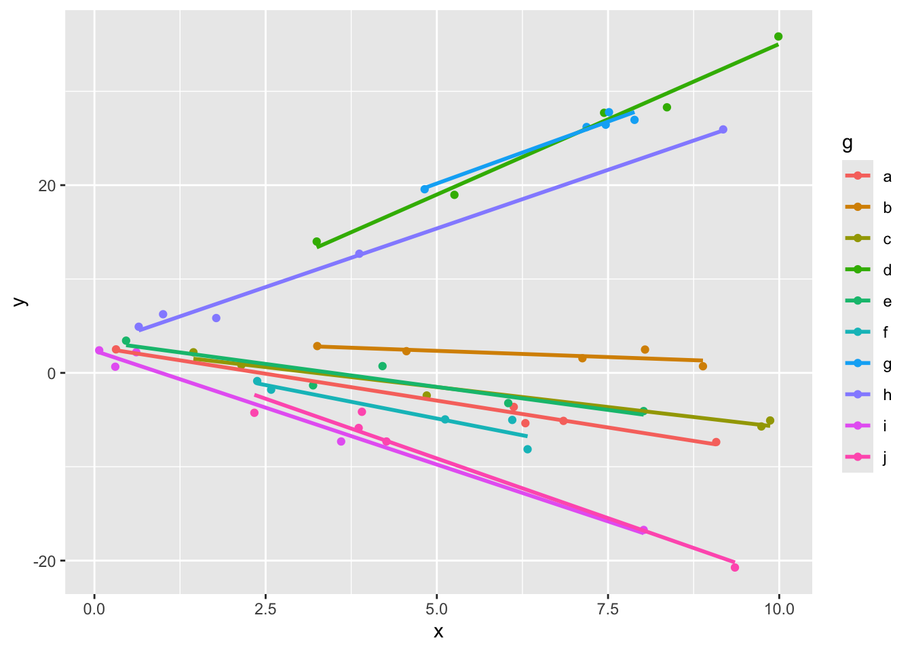
That is an interesting plot. What is going on? The symphony effect is what is causing the slopes to vary so much between successive marks. If we remove the random symphony effect, then we get the following plot, which looks nicer, but doesn’t fit the data as well.
## refitting model(s) with ML (instead of REML)## Data: bbsmall
## Models:
## mod7: tempo ~ mark * ptype + (1 | conductor)
## modmixed: tempo ~ mark * ptype + (1 | conductor) + (1 | symphony)
## npar AIC BIC logLik -2*log(L) Chisq Df Pr(>Chisq)
## mod7 8 10236 10279 -5110.1 10220
## modmixed 9 10025 10072 -5003.3 10007 213.63 1 < 2.2e-16 ***
## ---
## Signif. codes: 0 '***' 0.001 '**' 0.01 '*' 0.05 '.' 0.1 ' ' 1bb2 <- mod7 |>
broom.mixed::augment()
ggplot(aes(x = mark, y = .fitted, color = conductor), data = bb2) +
geom_line() +
geom_point(aes(y = tempo), alpha = .5) +
theme_minimal()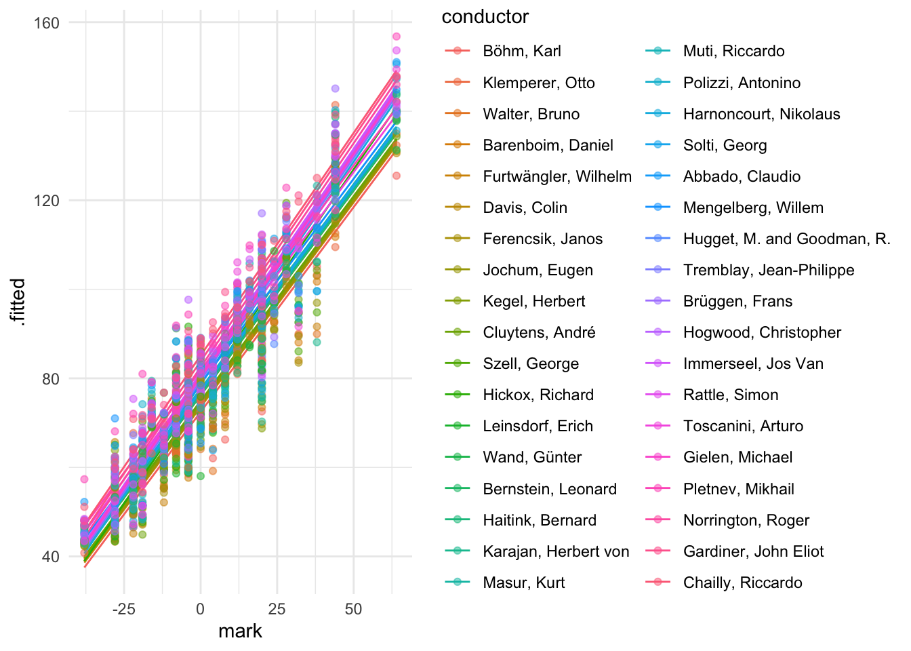
This plot helps explain the dependence on symphony as well:
ggplot(aes(x = mark, y = .fitted, group = conductor), data = bbsmall) +
geom_line() +
geom_point(aes(y = tempo, color = symphony), alpha = .7) +
theme_minimal()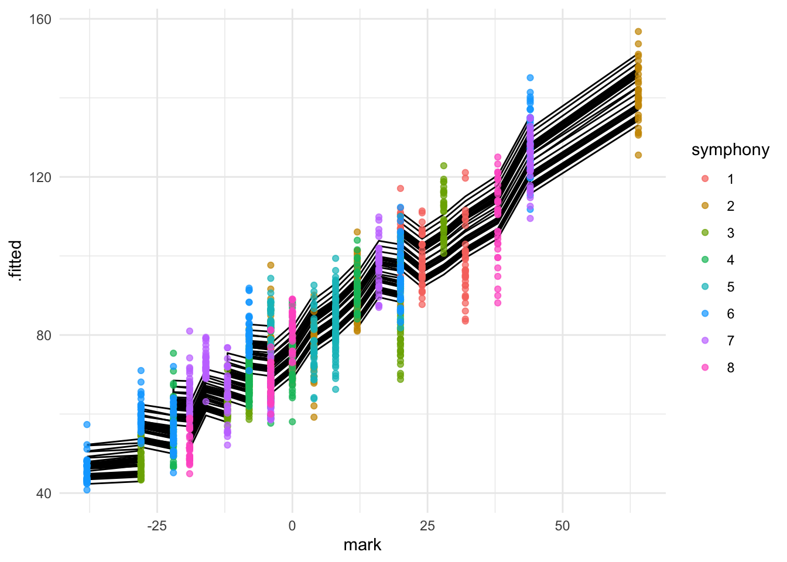
Now let’s see the mean tempo for each mark and ptype.
mark_vals <- sort(unique(bbsmall$mark))
library(emmeans)
emm <- emmeans(mod4, ~ mark * ptype, at = list(mark = mark_vals))
emm_df <- as.data.frame(emm)
ggplot(emm_df, aes(x = mark + 88, y = emmean, color = ptype)) +
geom_point ()+
geom_line() +
geom_abline(slope = 1, intercept = 0) 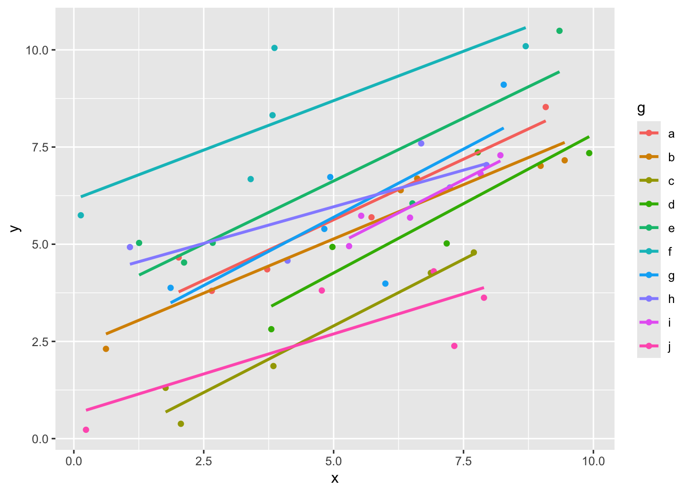
What are the differences in the slopes?
## contrast estimate SE df t.ratio p.value
## HI - HI influence 0.0063 0.0280 1430 0.225 0.9725
## HI - Romantic 0.0864 0.0231 1430 3.747 0.0005
## HI influence - Romantic 0.0801 0.0217 1430 3.690 0.0007
##
## Degrees-of-freedom method: kenward-roger
## P value adjustment: tukey method for comparing a family of 3 estimatesWhich slopes are significantly different than 1?
## ptype mark.trend SE df lower.CL upper.CL
## HI 1.020 0.0209 1433 0.979 1.061
## HI influence 1.014 0.0194 1433 0.976 1.052
## Romantic 0.934 0.0111 1436 0.912 0.956
##
## Degrees-of-freedom method: kenward-roger
## Confidence level used: 0.95## ptype mark.trend SE df null t.ratio p.value
## HI 1.020 0.0209 1433 1 0.971 0.3315
## HI influence 1.014 0.0194 1433 1 0.721 0.4708
## Romantic 0.934 0.0111 1436 1 -5.969 <0.0001
##
## Degrees-of-freedom method: kenward-rogerHow would you do a t.test just on mark 84 as to whether the mean tempo is 84? Pretend like we don’t have any other data.
bb2 <- bbsmall |>
filter(mark == -4) |>
select(matches("^[a-z]"))
bb2 |>
with(t.test(tempo, mu = 84))#NOT VALID##
## One Sample t-test
##
## data: tempo
## t = -16.722, df = 179, p-value < 2.2e-16
## alternative hypothesis: true mean is not equal to 84
## 95 percent confidence interval:
## 71.08641 73.81246
## sample estimates:
## mean of x
## 72.44943This is not valid because different conductors appear multiple times.
## boundary (singular) fit: see help('isSingular')## Linear mixed model fit by REML. t-tests use Satterthwaite's method [
## lmerModLmerTest]
## Formula: tempo ~ 1 + (1 | conductor)
## Data: bb2
##
## REML criterion at convergence: 1310.3
##
## Scaled residuals:
## Min 1Q Median 3Q Max
## -1.5934 -0.8437 -0.2739 0.9426 2.7212
##
## Random effects:
## Groups Name Variance Std.Dev.
## conductor (Intercept) 0.00 0.000
## Residual 85.88 9.267
## Number of obs: 180, groups: conductor, 36
##
## Fixed effects:
## Estimate Std. Error df t value Pr(>|t|)
## (Intercept) 72.4494 0.6907 179.0000 104.9 <2e-16 ***
## ---
## Signif. codes: 0 '***' 0.001 '**' 0.01 '*' 0.05 '.' 0.1 ' ' 1
## optimizer (nloptwrap) convergence code: 0 (OK)
## boundary (singular) fit: see help('isSingular')Note that the conductor variance is zero. This could be because there is no conductor effect (though I doubt that seriously based on the work we did before) or because we don’t have enough data to properly estimate things. Let’s remind ourselves how we might estimate the variance of the random intercept.
## [1] 11.80086#alternative method
bb2 |>
group_by(conductor) |>
summarize(mean_tempo = mean(tempo)) |>
summarize(between_var = var(mean_tempo)) #gives same result## # A tibble: 1 × 1
## between_var
## <dbl>
## 1 11.8This estimate gives us a variance of nearly 12, which is quite large. The estimate from lmer is zero, which suggests that we don’t have enough data to properly estimate the variance of the random intercepts. This is a common issue when we have a small number of groups (in this case, conductors) and a small number of observations per group. In this case, we have 36 conductors and five observations per conductor for mark 84, which is not a lot of data to estimate the variance of the random intercepts. This is why we get a zero estimate for the variance of the random intercepts, which is likely not the true value, but rather an artifact of the limited data we have for this particular mark.
In the end, we have little choice but to average the values of tempo across all observations.
##
## One Sample t-test
##
## data: mu
## t = -20.174, df = 35, p-value < 2.2e-16
## alternative hypothesis: true mean is not equal to 84
## 95 percent confidence interval:
## 71.28711 73.61175
## sample estimates:
## mean of x
## 72.44943